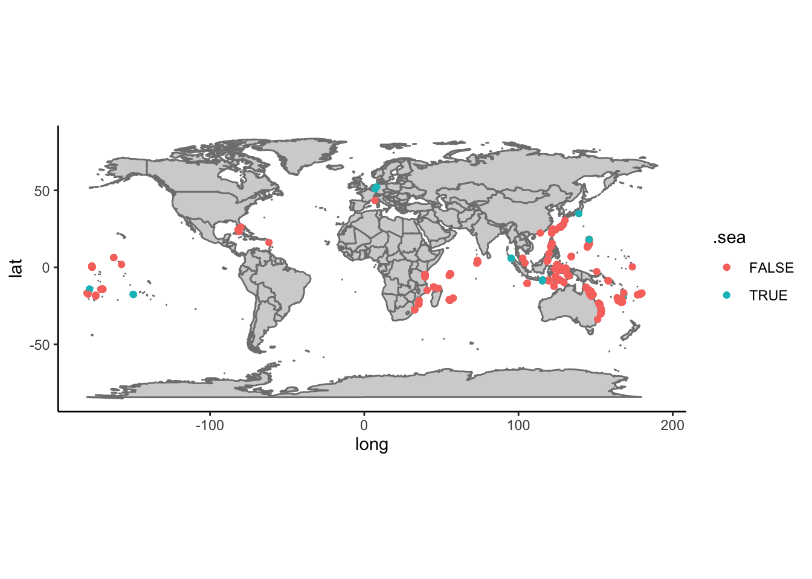
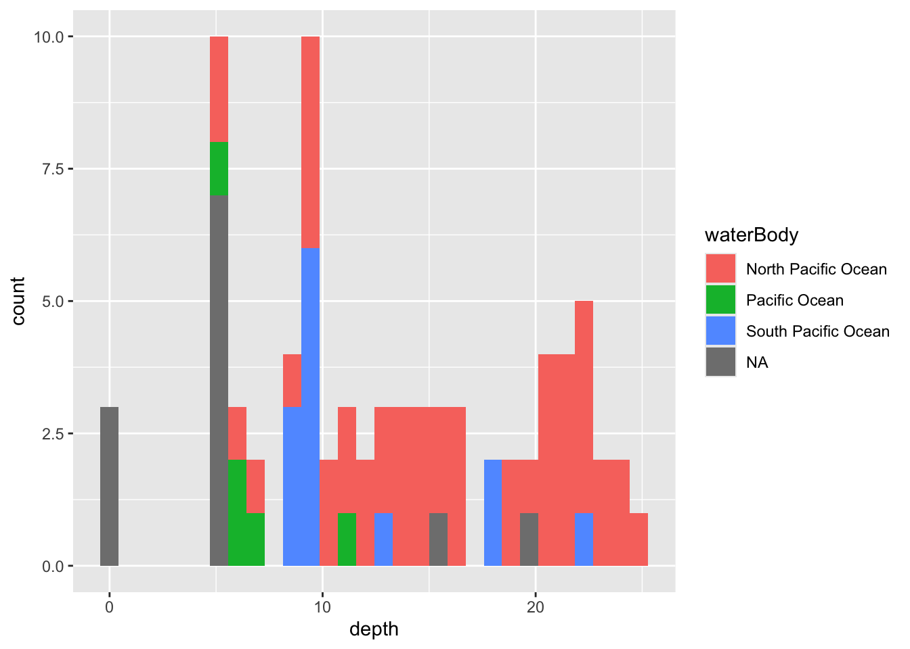

Atividade 3
3.1 Acesso a bancos de dados abertos
O acesso pode ser feito de diferentes formas, seja diretamente no website do repositório, utilizando-se pacotes específicos que acessam os repositórios via R ou Python, ou através de API (Application Programming Interface). Nesta última opção, o repositório é acessado por outro aplicativo ou serviço web para automatização de tarefas, seja em servidor local ou remoto, mas requer conhecimento de programação em Java e outras linguagens e não será tratado aqui.
Nesta atividade, temos como objetivo acessar um repositório de dados de ocorrência de espécies, inspecionar os dados, avaliar sua qualidade e fazer um mapa com as ocorrências.
Para iniciar, vamos escolher um repositório e uma espécie de interesse. Vamos iniciar com uma única espécie para facilitar as demais etapas.
O GBIF (Global Biodiversity Information Facility) é o maior repositório de ocorrências da biodiversidade da atualidade, então será nossa opção de repositório. No entanto, o OBIS (Ocean Biodiversity Information System) é um repositório dedicado às espécies marinhas e espelhado no GBIF. Assim, espera-se que algumas ocorrências sejam duplicadas nos dois repositórios.
3.1.1 Exemplo: Finding Dori
A espécie-alvo será o peixe marinho Paracanthurus hepatus, também conhecido como Blue Tang e, mais recentemente como Dori!.

Nosso primeiro exemplor será com as ocorrencias do
GBIF e, para tal, vamos utilizar o pacote
rgbif.
3.1.2 GBIF
Vamos fazer uso do pacote tidyverse para manipular dos
dados, então vamos carregar este pacote e o rgbif.
É importante explorar as funções do pacote e pode-se fazer isto
usando o comando ?rgbif e, para ler sobre uma função em
particular basta colocar ? em frente ao nome da função. Se
o pacote não estiver carregado ou instalada é preciso usar
??.
A função occ_data faz uma busca simplificada das
ocorrências no repositório do GBIF por meio do nome
científico, número de identificação, país e outros. Neste caso, vamos
procurar diretamente pelo nome da espécie-alvo. Outros atributos podem
ser adicionados à função para refinar a busca, leia o material de ajuda
da função para ter uma ideia. Vamos aproveitar alguns destes atributos e
selecionar apenas ocorrências que possuem coordenadas e sem problemas
geoespaciais.
# checar funcoes
?occ_data
# baixar ocorrencias
dori_gbif <- occ_data(scientificName = "Paracanthurus hepatus",
hasCoordinate = TRUE,
hasGeospatialIssue=FALSE)
# dimensoes
dim(dori_gbif)## NULLdim(dori_gbif$data)## [1] 500 147# checar campos
dori_gbif$data %>% names## [1] "key"
## [2] "scientificName"
## [3] "decimalLatitude"
## [4] "decimalLongitude"
## [5] "issues"
## [6] "datasetKey"
## [7] "publishingOrgKey"
## [8] "installationKey"
## [9] "publishingCountry"
## [10] "protocol"
## [11] "lastCrawled"
## [12] "lastParsed"
## [13] "crawlId"
## [14] "hostingOrganizationKey"
## [15] "basisOfRecord"
## [16] "occurrenceStatus"
## [17] "lifeStage"
## [18] "taxonKey"
## [19] "kingdomKey"
## [20] "phylumKey"
## [21] "orderKey"
## [22] "familyKey"
## [23] "genusKey"
## [24] "speciesKey"
## [25] "acceptedTaxonKey"
## [26] "acceptedScientificName"
## [27] "kingdom"
## [28] "phylum"
## [29] "order"
## [30] "family"
## [31] "genus"
## [32] "species"
## [33] "genericName"
## [34] "specificEpithet"
## [35] "taxonRank"
## [36] "taxonomicStatus"
## [37] "iucnRedListCategory"
## [38] "dateIdentified"
## [39] "coordinateUncertaintyInMeters"
## [40] "continent"
## [41] "stateProvince"
## [42] "year"
## [43] "month"
## [44] "day"
## [45] "eventDate"
## [46] "modified"
## [47] "lastInterpreted"
## [48] "references"
## [49] "license"
## [50] "isInCluster"
## [51] "datasetName"
## [52] "recordedBy"
## [53] "identifiedBy"
## [54] "geodeticDatum"
## [55] "countryCode"
## [56] "country"
## [57] "rightsHolder"
## [58] "identifier"
## [59] "http://unknown.org/nick"
## [60] "verbatimEventDate"
## [61] "collectionCode"
## [62] "gbifID"
## [63] "verbatimLocality"
## [64] "occurrenceID"
## [65] "taxonID"
## [66] "catalogNumber"
## [67] "institutionCode"
## [68] "eventTime"
## [69] "http://unknown.org/captive"
## [70] "identificationID"
## [71] "recordNumber"
## [72] "vernacularName"
## [73] "dynamicProperties"
## [74] "http://unknown.org/taxonRankID"
## [75] "taxonConceptID"
## [76] "identificationVerificationStatus"
## [77] "http://unknown.org/species"
## [78] "taxonRemarks"
## [79] "occurrenceRemarks"
## [80] "distanceFromCentroidInMeters"
## [81] "networkKeys"
## [82] "coordinatePrecision"
## [83] "institutionKey"
## [84] "otherCatalogNumbers"
## [85] "samplingProtocol"
## [86] "eventID"
## [87] "acceptedNameUsage"
## [88] "locationRemarks"
## [89] "identificationRemarks"
## [90] "nameAccordingTo"
## [91] "institutionID"
## [92] "higherGeography"
## [93] "locality"
## [94] "language"
## [95] "type"
## [96] "collectionID"
## [97] "higherClassification"
## [98] "elevation"
## [99] "elevationAccuracy"
## [100] "depth"
## [101] "depthAccuracy"
## [102] "datasetID"
## [103] "footprintWKT"
## [104] "originalNameUsage"
## [105] "county"
## [106] "individualCount"
## [107] "waterBody"
## [108] "sampleSizeUnit"
## [109] "sampleSizeValue"
## [110] "habitat"
## [111] "maximumDistanceAboveSurfaceInMeters"
## [112] "dataGeneralizations"
## [113] "georeferencedBy"
## [114] "georeferenceProtocol"
## [115] "islandGroup"
## [116] "island"
## [117] "verbatimDepth"
## [118] "ownerInstitutionCode"
## [119] "rights"
## [120] "georeferenceSources"
## [121] "projectId"
## [122] "programmeAcronym"
## [123] "organismQuantity"
## [124] "organismQuantityType"
## [125] "locationAccordingTo"
## [126] "endDayOfYear"
## [127] "startDayOfYear"
## [128] "samplingEffort"
## [129] "fieldNumber"
## [130] "locationID"
## [131] "eventRemarks"
## [132] "associatedReferences"
## [133] "http://unknown.org/language"
## [134] "verbatimIdentification"
## [135] "collectionKey"
## [136] "materialSampleID"
## [137] "disposition"
## [138] "preparations"
## [139] "municipality"
## [140] "name"
## [141] "bibliographicCitation"
## [142] "identificationReferences"
## [143] "verbatimSRS"
## [144] "georeferenceVerificationStatus"
## [145] "verbatimCoordinateSystem"
## [146] "nomenclaturalCode"
## [147] "parentEventID"Acima, vemos que o conjunto de dados tem ocorrências (uma por linha)
e variáveis. As variáveis podem ser utilizadas para filtrar as
ocorrências de acordo com o objetivo, além de fornecerem diversos dados
a respeito das ocorrências, incluindo dados dos amostradores e
detentores dos direitos. Vale notar que o conjunto de dados retornado
pelo GBIF não é um data frame simples, mas
sim um list que contém um conjunto de
data frames. Para acessar estes data frames é
necessário usar o operador $.
3.2 Problemas reportados
Um dos campos mais úteis dos dados é a coluna issues,
pois ela indica problema já identificados pelo validador automático do
repositório. Os problemas (issues) possuem um código que pode
ser conferido pela função gbif_issues. Ao usar a função não
é preciso indicar nenhum atributo, pois ela retornará um dataframe com
as abreviações usadas e a descrição dos problemas catalogados no
GBIF.
## code issue
## 1 bri BASIS_OF_RECORD_INVALID
## 2 ccm CONTINENT_COUNTRY_MISMATCH
## 3 cdc CONTINENT_DERIVED_FROM_COORDINATES
## 4 conti CONTINENT_INVALID
## 5 cdiv COORDINATE_INVALID
## 6 cdout COORDINATE_OUT_OF_RANGE
## 7 cdrep COORDINATE_REPROJECTED
## 8 cdrepf COORDINATE_REPROJECTION_FAILED
## 9 cdreps COORDINATE_REPROJECTION_SUSPICIOUS
## 10 cdround COORDINATE_ROUNDED
## 11 cucdmis COUNTRY_COORDINATE_MISMATCH
## 12 cudc COUNTRY_DERIVED_FROM_COORDINATES
## 13 cuiv COUNTRY_INVALID
## 14 cum COUNTRY_MISMATCH
## 15 depmms DEPTH_MIN_MAX_SWAPPED
## 16 depnn DEPTH_NON_NUMERIC
## 17 depnmet DEPTH_NOT_METRIC
## 18 depunl DEPTH_UNLIKELY
## 19 elmms ELEVATION_MIN_MAX_SWAPPED
## 20 elnn ELEVATION_NON_NUMERIC
## 21 elnmet ELEVATION_NOT_METRIC
## 22 elunl ELEVATION_UNLIKELY
## 23 gass84 GEODETIC_DATUM_ASSUMED_WGS84
## 24 gdativ GEODETIC_DATUM_INVALID
## 25 iddativ IDENTIFIED_DATE_INVALID
## 26 iddatunl IDENTIFIED_DATE_UNLIKELY
## 27 mdativ MODIFIED_DATE_INVALID
## 28 mdatunl MODIFIED_DATE_UNLIKELY
## 29 muldativ MULTIMEDIA_DATE_INVALID
## 30 muluriiv MULTIMEDIA_URI_INVALID
## 31 preneglat PRESUMED_NEGATED_LATITUDE
## 32 preneglon PRESUMED_NEGATED_LONGITUDE
## 33 preswcd PRESUMED_SWAPPED_COORDINATE
## 34 rdativ RECORDED_DATE_INVALID
## 35 rdatm RECORDED_DATE_MISMATCH
## 36 rdatunl RECORDED_DATE_UNLIKELY
## 37 refuriiv REFERENCES_URI_INVALID
## 38 txmatfuz TAXON_MATCH_FUZZY
## 39 txmathi TAXON_MATCH_HIGHERRANK
## 40 txmatnon TAXON_MATCH_NONE
## 41 typstativ TYPE_STATUS_INVALID
## 42 zerocd ZERO_COORDINATE
## 43 cdpi COORDINATE_PRECISION_INVALID
## 44 cdumi COORDINATE_UNCERTAINTY_METERS_INVALID
## 45 indci INDIVIDUAL_COUNT_INVALID
## 46 interr INTERPRETATION_ERROR
## 47 iccos INDIVIDUAL_COUNT_CONFLICTS_WITH_OCCURRENCE_STATUS
## 48 osiic OCCURRENCE_STATUS_INFERRED_FROM_INDIVIDUAL_COUNT
## 49 osu OCCURRENCE_STATUS_UNPARSABLE
## 50 geodi GEOREFERENCED_DATE_INVALID
## 51 geodu GEOREFERENCED_DATE_UNLIKELY
## 52 ambcol AMBIGUOUS_COLLECTION
## 53 ambinst AMBIGUOUS_INSTITUTION
## 54 colmafu COLLECTION_MATCH_FUZZY
## 55 colmano COLLECTION_MATCH_NONE
## 56 incomis INSTITUTION_COLLECTION_MISMATCH
## 57 inmafu INSTITUTION_MATCH_FUZZY
## 58 inmano INSTITUTION_MATCH_NONE
## 59 osifbor OCCURRENCE_STATUS_INFERRED_FROM_BASIS_OF_RECORD
## 60 diffown DIFFERENT_OWNER_INSTITUTION
## 61 taxmatagg TAXON_MATCH_AGGREGATE
## 62 fpsrsinv FOOTPRINT_SRS_INVALID
## 63 fpwktinv FOOTPRINT_WKT_INVALID
## 64 anm ACCEPTED_NAME_MISSING
## 65 annu ACCEPTED_NAME_NOT_UNIQUE
## 66 anuidi ACCEPTED_NAME_USAGE_ID_INVALID
## 67 aitidinv ALT_IDENTIFIER_INVALID
## 68 bbmn BACKBONE_MATCH_NONE
## 69 basauthm BASIONYM_AUTHOR_MISMATCH
## 70 bibrinv BIB_REFERENCE_INVALID
## 71 chsun CHAINED_SYNOYM
## 72 clasna CLASSIFICATION_NOT_APPLIED
## 73 clasroi CLASSIFICATION_RANK_ORDER_INVALID
## 74 conbascomb CONFLICTING_BASIONYM_COMBINATION
## 75 desinv DESCRIPTION_INVALID
## 76 disinv DISTRIBUTION_INVALID
## 77 hom HOMONYM
## 78 minv MULTIMEDIA_INVALID
## 79 npm NAME_PARENT_MISMATCH
## 80 ns NO_SPECIES
## 81 nsinv NOMENCLATURAL_STATUS_INVALID
## 82 onder ORIGINAL_NAME_DERIVED
## 83 onnu ORIGINAL_NAME_NOT_UNIQUE
## 84 onuidinv ORIGINAL_NAME_USAGE_ID_INVALID
## 85 ov ORTHOGRAPHIC_VARIANT
## 86 pc PARENT_CYCLE
## 87 pnnu PARENT_NAME_NOT_UNIQUE
## 88 pnuidinv PARENT_NAME_USAGE_ID_INVALID
## 89 pp PARTIALLY_PARSABLE
## 90 pbg PUBLISHED_BEFORE_GENUS
## 91 rankinv RANK_INVALID
## 92 relmiss RELATIONSHIP_MISSING
## 93 scina SCIENTIFIC_NAME_ASSEMBLED
## 94 spprinv SPECIES_PROFILE_INVALID
## 95 taxstinv TAXONOMIC_STATUS_INVALID
## 96 taxstmis TAXONOMIC_STATUS_MISMATCH
## 97 unpars UNPARSABLE
## 98 vernnameinv VERNACULAR_NAME_INVALID
## 99 backmatagg BACKBONE_MATCH_AGGREGATE
## description
## 1 The given basis of record is impossible to interpret or seriously different from the recommended vocabulary.
## 2 The interpreted continent and country do not match up.
## 3 The interpreted continent is based on the coordinates, not the verbatim string information.
## 4 Uninterpretable continent values found.
## 5 Coordinate value given in some form but GBIF is unable to interpret it.
## 6 Coordinate has invalid lat/lon values out of their decimal max range.
## 7 The original coordinate was successfully reprojected from a different geodetic datum to WGS84.
## 8 The given decimal latitude and longitude could not be reprojected to WGS84 based on the provided datum.
## 9 Indicates successful coordinate reprojection according to provided datum, but which results in a datum shift larger than 0.1 decimal degrees.
## 10 Original coordinate modified by rounding to 5 decimals.
## 11 The interpreted occurrence coordinates fall outside of the indicated country.
## 12 The interpreted country is based on the coordinates, not the verbatim string information.
## 13 Uninterpretable country values found.
## 14 Interpreted country for dwc:country and dwc:countryCode contradict each other.
## 15 Set if supplied min>max
## 16 Set if depth is a non numeric value
## 17 Set if supplied depth is not given in the metric system, for example using feet instead of meters
## 18 Set if depth is larger than 11.000m or negative.
## 19 Set if supplied min > max elevation
## 20 Set if elevation is a non numeric value
## 21 Set if supplied elevation is not given in the metric system, for example using feet instead of meters
## 22 Set if elevation is above the troposphere (17km) or below 11km (Mariana Trench).
## 23 Indicating that the interpreted coordinates assume they are based on WGS84 datum as the datum was either not indicated or interpretable.
## 24 The geodetic datum given could not be interpreted.
## 25 The date given for dwc:dateIdentified is invalid and cant be interpreted at all.
## 26 The date given for dwc:dateIdentified is in the future or before Linnean times (1700).
## 27 A (partial) invalid date is given for dc:modified, such as a non existing date, invalid zero month, etc.
## 28 The date given for dc:modified is in the future or predates unix time (1970).
## 29 An invalid date is given for dc:created of a multimedia object.
## 30 An invalid uri is given for a multimedia object.
## 31 Latitude appears to be negated, e.g. 32.3 instead of -32.3
## 32 Longitude appears to be negated, e.g. 32.3 instead of -32.3
## 33 Latitude and longitude appear to be swapped.
## 34 A (partial) invalid date is given, such as a non existing date, invalid zero month, etc.
## 35 The recording date specified as the eventDate string and the individual year, month, day are contradicting.
## 36 The recording date is highly unlikely, falling either into the future or represents a very old date before 1600 that predates modern taxonomy.
## 37 An invalid uri is given for dc:references.
## 38 Matching to the taxonomic backbone can only be done using a fuzzy, non exact match.
## 39 Matching to the taxonomic backbone can only be done on a higher rank and not the scientific name.
## 40 Matching to the taxonomic backbone cannot be done cause there was no match at all or several matches with too little information to keep them apart (homonyms).
## 41 The given type status is impossible to interpret or seriously different from the recommended vocabulary.
## 42 Coordinate is the exact 0/0 coordinate, often indicating a bad null coordinate.
## 43 Indicates an invalid or very unlikely coordinatePrecision
## 44 Indicates an invalid or very unlikely dwc:uncertaintyInMeters.
## 45 Individual count value not parsable into an integer.
## 46 An error occurred during interpretation, leaving the record interpretation incomplete.
## 47 Example: individual count value > 0, but occurrence status is absent and etc.
## 48 Occurrence status was inferred from the individual count value
## 49 Occurrence status value can't be assigned to OccurrenceStatus
## 50 The date given for dwc:georeferencedDate is invalid and can't be interpreted at all.
## 51 The date given for dwc:georeferencedDate is in the future or before Linnean times (1700).
## 52 The given collection matches with more than 1 GrSciColl collection.
## 53 The given institution matches with more than 1 GrSciColl institution.
## 54 The given collection was fuzzily matched to a GrSciColl collection.
## 55 The given collection couldn't be matched with any GrSciColl collection.
## 56 The collection matched doesn't belong to the institution matched.
## 57 The given institution was fuzzily matched to a GrSciColl institution.
## 58 The given institution couldn't be matched with any GrSciColl institution.
## 59 Occurrence status was inferred from basis of records
## 60 The given owner institution is different than the given institution. Therefore we assume it doesn't belong to the institution and we don't link it to the occurrence.
## 61 Matching to the taxonomic backbone can only be done on a species level, but the occurrence was in fact considered a broader species aggregate/complex.
## 62 The Footprint Spatial Reference System given could not be interpreted
## 63 The Footprint Well-Known-Text given could not be interpreted
## 64 Synonym lacking an accepted name.
## 65 Synonym has a verbatim accepted name which is not unique and refers to several records.
## 66 The value for dwc:acceptedNameUsageID could not be resolved.
## 67 At least one alternative identifier extension record attached to this name usage is invalid.
## 68 Name usage could not be matched to the GBIF backbone.
## 69 The authorship of the original name does not match the authorship in brackets of the actual name.
## 70 At least one bibliographic reference extension record attached to this name usage is invalid.
## 71 If a synonym points to another synonym as its accepted taxon the chain is resolved.
## 72 The denormalized classification could not be applied to the name usage.
## 73 The given ranks of the names in the classification hierarchy do not follow the hierarchy of ranks.
## 74 There have been more than one accepted name in a homotypical basionym group of names.
## 75 At least one description extension record attached to this name usage is invalid.
## 76 At least one distribution extension record attached to this name usage is invalid.
## 77 A not synonymized homonym exists for this name in some other backbone source which have been ignored at build time.
## 78 At least one multimedia extension record attached to this name usage is invalid.
## 79 The (accepted) bi/trinomial name does not match the parent name and should be recombined into the parent genus/species.
## 80 The group (currently only genera are tested) are lacking any accepted species GBIF backbone specific issue.
## 81 dwc:nomenclaturalStatus could not be interpreted
## 82 Record has a original name (basionym) relationship which was derived from name & authorship comparison, but did not exist explicitly in the data.
## 83 Record has a verbatim original name (basionym) which is not unique and refers to several records.
## 84 The value for dwc:originalNameUsageID could not be resolved.
## 85 A potential orthographic variant exists in the backbone.
## 86 The child parent classification resulted into a cycle that needed to be resolved/cut.
## 87 Record has a verbatim parent name which is not unique and refers to several records.
## 88 The value for dwc:parentNameUsageID could not be resolved.
## 89 The beginning of the scientific name string was parsed, but there is additional information in the string that was not understood.
## 90 A bi/trinomial name published earlier than the parent genus was published.
## 91 dwc:taxonRank could not be interpreted
## 92 There were problems representing all name usage relationships, i.e.
## 93 The scientific name was assembled from the individual name parts and not given as a whole string.
## 94 At least one species profile extension record attached to this name usage is invalid.
## 95 dwc:taxonomicStatus could not be interpreted
## 96 no description
## 97 The scientific name string could not be parsed at all, but appears to be a parsable name type, i.e.
## 98 At least one vernacular name extension record attached to this name usage is invalid.
## 99 Name usage could only be matched to a GBIF backbone species, but was in fact a broader species aggregate/complex.
## type
## 1 occurrence
## 2 occurrence
## 3 occurrence
## 4 occurrence
## 5 occurrence
## 6 occurrence
## 7 occurrence
## 8 occurrence
## 9 occurrence
## 10 occurrence
## 11 occurrence
## 12 occurrence
## 13 occurrence
## 14 occurrence
## 15 occurrence
## 16 occurrence
## 17 occurrence
## 18 occurrence
## 19 occurrence
## 20 occurrence
## 21 occurrence
## 22 occurrence
## 23 occurrence
## 24 occurrence
## 25 occurrence
## 26 occurrence
## 27 occurrence
## 28 occurrence
## 29 occurrence
## 30 occurrence
## 31 occurrence
## 32 occurrence
## 33 occurrence
## 34 occurrence
## 35 occurrence
## 36 occurrence
## 37 occurrence
## 38 occurrence
## 39 occurrence
## 40 occurrence
## 41 occurrence
## 42 occurrence
## 43 occurrence
## 44 occurrence
## 45 occurrence
## 46 occurrence
## 47 occurrence
## 48 occurrence
## 49 occurrence
## 50 occurrence
## 51 occurrence
## 52 occurrence
## 53 occurrence
## 54 occurrence
## 55 occurrence
## 56 occurrence
## 57 occurrence
## 58 occurrence
## 59 occurrence
## 60 occurrence
## 61 occurrence
## 62 occurrence
## 63 occurrence
## 64 name
## 65 name
## 66 name
## 67 name
## 68 name
## 69 name
## 70 name
## 71 name
## 72 name
## 73 name
## 74 name
## 75 name
## 76 name
## 77 name
## 78 name
## 79 name
## 80 name
## 81 name
## 82 name
## 83 name
## 84 name
## 85 name
## 86 name
## 87 name
## 88 name
## 89 name
## 90 name
## 91 name
## 92 name
## 93 name
## 94 name
## 95 name
## 96 name
## 97 name
## 98 name
## 99 namePara checar os issues indicados na base baixada é
necessário um pequeno tratamento, uma vez que algumas ocorrências
possuem múltiplos problemas. Assim, utilizamos a função
strsplit para individualizar os issues e poder
conferí-los.
## code issue
## 1 ccm CONTINENT_COUNTRY_MISMATCH
## 2 cdc CONTINENT_DERIVED_FROM_COORDINATES
## 3 conti CONTINENT_INVALID
## 4 cdreps COORDINATE_REPROJECTION_SUSPICIOUS
## 5 cdround COORDINATE_ROUNDED
## 6 cudc COUNTRY_DERIVED_FROM_COORDINATES
## 7 cum COUNTRY_MISMATCH
## 8 gass84 GEODETIC_DATUM_ASSUMED_WGS84
## 9 gdativ GEODETIC_DATUM_INVALID
## 10 refuriiv REFERENCES_URI_INVALID
## 11 osiic OCCURRENCE_STATUS_INFERRED_FROM_INDIVIDUAL_COUNT
## 12 colmafu COLLECTION_MATCH_FUZZY
## 13 incomis INSTITUTION_COLLECTION_MISMATCH
## 14 inmafu INSTITUTION_MATCH_FUZZY
## description
## 1 The interpreted continent and country do not match up.
## 2 The interpreted continent is based on the coordinates, not the verbatim string information.
## 3 Uninterpretable continent values found.
## 4 Indicates successful coordinate reprojection according to provided datum, but which results in a datum shift larger than 0.1 decimal degrees.
## 5 Original coordinate modified by rounding to 5 decimals.
## 6 The interpreted country is based on the coordinates, not the verbatim string information.
## 7 Interpreted country for dwc:country and dwc:countryCode contradict each other.
## 8 Indicating that the interpreted coordinates assume they are based on WGS84 datum as the datum was either not indicated or interpretable.
## 9 The geodetic datum given could not be interpreted.
## 10 An invalid uri is given for dc:references.
## 11 Occurrence status was inferred from the individual count value
## 12 The given collection was fuzzily matched to a GrSciColl collection.
## 13 The collection matched doesn't belong to the institution matched.
## 14 The given institution was fuzzily matched to a GrSciColl institution.
## type
## 1 occurrence
## 2 occurrence
## 3 occurrence
## 4 occurrence
## 5 occurrence
## 6 occurrence
## 7 occurrence
## 8 occurrence
## 9 occurrence
## 10 occurrence
## 11 occurrence
## 12 occurrence
## 13 occurrence
## 14 occurrenceA maioria dos problemas reportados é relacionado com discrepancias entre informações indicadas pelos autores e as levantadas pelo algoritmo de checagem, mas nenhum parece invalidar as ocorrências, por enquanto.
Prosseguimos selecionando algumas variáveis que serão úteis para a validação dos dados e futuras análises, como coordenadas, profundidade, nome da base de dados etc.
dori_gbif1 <- dori_gbif$data %>%
dplyr::select(scientificName, acceptedScientificName, decimalLatitude, decimalLongitude,
issues, waterBody, basisOfRecord, occurrenceStatus, rightsHolder,
datasetName, recordedBy, depth, locality, habitat) Note que temos 500 ocorrências, no entanto, vamos ver quantas são
únicas aplicando a função distinct do pacote
dplyr.
dori_gbif1 <- dori_gbif1 %>%
distinct() No fim, observamos que ficamos com 378 ocorrências agora, e isso acontece por causa de diferenças em colunas que, neste caso, não serão usadas para o objetivo desta prática.
Para identificar todos os valores únicos presented nos dados, vamos
aplicar a função unique a cada coluna com um loop
na função lapply.
# checar niveis dos fatores
lapply(dori_gbif1, unique)## $scientificName
## [1] "Paracanthurus hepatus (Linnaeus, 1766)"
## [2] "BOLD:AAC3227"
##
## $acceptedScientificName
## [1] "Paracanthurus hepatus (Linnaeus, 1766)"
## [2] "BOLD:AAC3227"
##
## $decimalLatitude
## [1] -30.205483 -27.532258 -8.413278 -16.700000 -30.017840 -5.815955
## [7] -22.492167 -4.696106 7.208062 -33.800169 -30.202839 -27.400000
## [13] -4.289271 -17.071277 -17.075208 -27.465857 13.477716 13.480037
## [19] 4.595825 4.121438 -5.775973 -10.429189 -14.550000 -17.745759
## [25] -27.531884 -5.771697 -5.821940 -5.820498 -7.670200 1.743368
## [31] -24.114077 -24.113960 -5.775017 -22.592943 -19.949027 -17.070864
## [37] -17.054430 -29.479089 -0.556017 -28.611278 -4.656524 -17.636875
## [43] 25.015492 2.728201 -4.356636 -6.353158 22.075700 28.169633
## [49] 22.319095 -14.663600 -18.287067 -8.349668 -13.647350 -24.113935
## [55] 22.680581 27.404722 22.680278 -8.476267 -21.057139 -21.654910
## [61] -28.196141 26.189035 -2.244373 -8.727807 -2.204717 -30.204320
## [67] -24.113638 15.022028 -5.816751 27.388889 -5.840112 -28.611482
## [73] -24.116345 -17.076469 -17.077753 -10.423094 -29.927833 -10.393100
## [79] -8.481814 -8.612647 1.615687 13.522638 13.518570 4.116129
## [85] -28.611023 0.186880 0.798243 6.384268 -16.428461 27.328333
## [91] -4.714799 -16.767523 4.109330 -21.151370 -23.817600 -29.929429
## [97] -4.279653 -4.288243 -4.258536 -24.110377 -0.584608 -17.575953
## [103] 14.865178 14.838945 13.282353 18.090721 18.169705 18.144987
## [109] 14.108882 14.169204 15.192456 15.274841 14.924998 15.052066
## [115] 14.927633 15.010917 25.752000 -18.158240 -27.535837 -18.171880
## [121] -18.167790 18.093946 18.050178 18.085108 15.134210 15.111052
## [127] 15.113834 16.718400 -2.757490 13.686601 -5.820478 -18.671667
## [133] -21.239710 -21.170370 -21.205960 -21.205150 -21.035070 -21.233100
## [139] -21.073840 -2.260250 -2.249608 -5.775622 -14.273857 -17.076470
## [145] -16.783458 -21.349500 -21.484390 -16.657679 30.487778 -5.801525
## [151] -25.288066 -8.400000 -21.319020 -4.321165 24.306446 -17.068420
## [157] -8.689442 -14.235900 -21.370350 -21.366690 -21.371320 26.291180
## [163] 1.872135 -17.116486 0.190310 0.187242 0.191557 0.820899
## [169] 0.822466 -17.070283 -17.062497 -14.151863 -14.224068 -14.278573
## [175] -14.279030 -14.241373 -14.285210 -14.273254 16.135100 6.382461
## [181] -21.660010 -21.991250 -27.532000 24.436835 -5.611260 -27.525900
## [187] -15.484300 -8.475600 -8.537167 -4.530000 -5.304400 24.472500
## [193] -12.872840 23.212100 -4.714922 -21.015540 -21.015000 6.986900
## [199] 7.134422 -27.523100 -27.520850 -21.058230 -17.408093 -4.292379
## [205] 14.843660 18.149654 14.201462 15.269845 15.261225 15.282955
## [211] 15.275694 15.275189 15.276654 15.281291 15.268836 15.256714
## [217] 15.116363 15.003307 14.934944 -8.636633 17.591924 26.237900
## [223] -8.459459 24.455000 -8.349183 -23.890883 -23.322967 -8.277300
## [229] 13.230371 -8.505400 -24.112880 -8.289789 13.522800 -14.529133
## [235] -21.160690 -29.447500 -14.681537 -27.529900 -27.538681 -6.456933
## [241] -29.930400 -30.202300 5.550000 -23.247900 18.437700 -21.851700
## [247] -21.897300 -21.248000 -20.976700 -17.827500 11.030300 -8.583764
## [253] -16.931600 -12.217000 27.510000 19.292300 -21.365210 -21.372000
## [259] -21.371260 -17.092612 4.500861 -17.100688 0.194956 0.190741
## [265] 0.195480 16.383300 -8.556720 -26.822600 -6.634620 -8.277000
## [271] 25.821500 -14.523517 -8.295380 3.352720 8.739842 39.284700
## [277] -27.524900 -27.533300 -12.085451 -24.111530 19.675859 18.049572
## [283] 15.255971 15.110629 15.105225 15.091283 16.710502 14.931544
## [289] 14.952465 14.864917 14.847157 20.748400 15.077733 15.086594
## [295] 15.069572 15.055609 -29.923100 -30.017600 -21.150000 16.324900
## [301] -23.796683 -23.848667 -23.745917 -21.146900 -18.846000 0.206550
## [307] 0.193110 0.190290 -14.652800 -14.652770 -28.611000 -27.413500
## [313] -27.413510 25.034300 -10.429600 -10.428100 -4.313293 2.285408
## [319] -2.244887 -0.580346 20.307600 12.601900 5.864600 -29.930440
## [325] -30.206662 15.273530 15.254217 15.268808
##
## $decimalLongitude
## [1] 153.26693 153.46261 127.31272 145.90000 153.27135 39.38287
## [7] 166.44180 39.30214 134.32551 151.30166 153.26505 153.56667
## [13] 55.85906 179.10738 179.10387 153.50513 144.70608 144.70552
## [19] 118.86434 118.63332 123.89485 105.66692 145.40000 177.13443
## [25] 123.88753 39.38888 39.38350 125.92338 125.15346 152.70885
## [31] 152.70963 123.89355 167.40760 57.62582 179.10844 179.07802
## [37] 153.36404 130.68908 153.62837 39.36794 148.44080 122.00093
## [43] 72.97009 55.83400 39.30729 121.58082 129.29053 114.16936
## [49] 145.66355 147.69919 116.06586 144.10688 152.71469 121.50087
## [55] 128.53389 121.49028 125.89175 55.21947 164.54949 153.57911
## [61] 127.40389 130.55572 115.54442 130.56772 153.26482 152.70748
## [67] 145.57996 39.38253 128.52111 39.46530 153.62856 152.70794
## [73] 179.11049 179.10984 105.66871 153.38925 105.66045 119.52971
## [79] 158.20064 124.73795 120.97290 120.99116 118.63001 153.62923
## [85] -176.46176 -176.62003 -162.46472 145.99662 128.55778 39.37970
## [91] 179.94055 118.62500 35.08851 35.40329 153.39147 55.72781
## [97] 55.86531 55.67413 152.71023 130.63281 178.98593 145.56811
## [103] 145.53007 144.76383 145.76129 145.79179 145.75369 145.16840
## [109] 145.28545 145.70396 145.79259 145.64574 145.65608 145.63037
## [115] 145.58553 141.47400 -174.18171 32.67988 -174.20580 -174.18214
## [121] 145.74479 145.70588 145.72653 145.67886 145.70275 145.69897
## [127] 145.77638 150.71890 120.91363 39.38162 -174.07435 55.30145
## [133] 55.27931 55.27962 55.27898 55.21433 55.29266 55.22368
## [139] 130.64465 130.62375 123.89358 -169.49334 179.11049 179.92354
## [145] 55.46860 35.45493 146.02884 130.15250 39.38400 152.90847
## [151] 119.35000 35.50786 55.86569 124.09048 179.10468 119.57251
## [157] -178.17400 55.73661 55.65609 55.68264 126.78845 -157.42781
## [163] 179.10813 -176.45731 -176.46102 -176.48886 -176.62671 -176.62678
## [169] 179.10590 179.09860 -169.61060 -169.51954 -170.54882 -170.54739
## [175] -170.67885 -170.54548 -170.50510 -61.77100 -162.42674 35.42359
## [181] 35.38154 32.68670 123.79669 132.74726 32.68540 147.10760
## [187] 119.55653 119.60195 131.65190 131.99690 122.96361 45.27593
## [193] -81.18580 39.37488 55.23410 55.23405 134.21884 134.22094
## [199] 32.68600 32.68732 55.21915 -179.05644 55.86796 145.56591
## [205] 145.81155 145.26090 145.78511 145.82889 145.80272 145.79354
## [211] 145.82971 145.82731 145.80069 145.83191 145.81463 145.69629
## [217] 145.67423 145.65172 119.71143 145.81372 -80.00000 119.57176
## [223] -81.85830 116.05110 152.43017 151.98242 115.59450 144.64386
## [229] 157.99209 152.71402 115.60694 120.99300 145.58833 55.83662
## [235] 159.05390 145.43811 32.68800 32.67879 71.25228 153.38980
## [241] 153.26580 73.45000 155.56720 -69.69920 153.52120 153.53760
## [247] 155.76360 154.34530 148.50350 125.72300 119.60596 149.99040
## [253] 123.00390 34.18600 -81.10510 55.53040 55.54547 55.54613
## [259] 179.09921 118.93199 179.12516 -176.48664 -176.48881 -176.48669
## [265] -86.40000 125.50000 32.88350 39.23600 115.59400 -77.93170
## [271] 145.58198 115.61258 72.43150 167.69440 -76.60830 32.68440
## [277] 32.68090 96.87765 152.71830 145.40914 145.70552 145.72341
## [283] 145.70190 145.72023 145.75022 145.76719 145.63004 145.61942
## [289] 145.58005 145.56905 -86.88900 145.65842 145.65793 145.65610
## [295] 145.59721 153.38810 153.26920 55.83000 -86.57990 152.30293
## [301] 152.38175 152.28250 55.82176 36.32800 -176.47949 -176.45694
## [307] -176.45685 145.45050 153.62830 153.52520 153.62831 153.52519
## [313] -77.39630 105.66810 105.66580 55.86585 118.24362 130.56744
## [319] 130.54309 -87.01840 -70.05770 95.26880 153.38984 153.26605
## [325] 145.79122 145.75177 145.83218
##
## $issues
## [1] "cdc,cdround"
## [2] ""
## [3] "cudc"
## [4] "cdround,cudc"
## [5] "incomis,inmafu"
## [6] "cdc,cdround,gass84,incomis,inmafu"
## [7] "cdc"
## [8] "cum"
## [9] "cdc,cudc,gass84,gdativ,refuriiv"
## [10] "cudc,gass84,gdativ,refuriiv"
## [11] "cdc,cdreps"
## [12] "osiic"
## [13] "cdc,cdround,gass84"
## [14] "gass84,incomis,inmafu"
## [15] "cdc,cum,gass84"
## [16] "cdc,cum"
## [17] "cdc,gass84,incomis,inmafu"
## [18] "cdc,gass84"
## [19] "gass84"
## [20] "cdc,cdround,cudc,gass84,gdativ,refuriiv"
## [21] "cdreps"
## [22] "cdround,gass84"
## [23] "conti,cdround,gass84,osiic,colmafu"
## [24] "ccm"
## [25] "cdc,cudc,gass84,osiic"
## [26] "cdc,cudc"
##
## $waterBody
## [1] NA "North Pacific Ocean" "Celebes Sea"
## [4] "Pacific Ocean" "South Pacific Ocean" "Flores Sea"
## [7] "Pacific" "Caribbean Sea" "Gulf of Mexico"
## [10] "Atlantic Ocean" "Verde Island" "La Caleta"
## [13] "Pacific, Leyte Gulf" "Red Sea" "Carribean"
## [16] "Banda Sea" "Indian Ocean" "IndianOcean"
## [19] "Laut Bali" "Royal Caribbean" "Laccadive Sea"
## [22] "Baltimore, MD"
##
## $basisOfRecord
## [1] "HUMAN_OBSERVATION" "PRESERVED_SPECIMEN" "MATERIAL_SAMPLE"
## [4] "OBSERVATION"
##
## $occurrenceStatus
## [1] "PRESENT"
##
## $rightsHolder
## [1] "divercraig" "Cameron Duchatel" "ulexeuropaeus"
## [4] NA "Joanne" "Emanuele Santarelli"
## [7] "Claire Goiran" "quentindepl" "sueinomaha"
## [10] "Peter" "Jens Sommer-Knudsen" "mdoelling"
## [13] "Mark Rosenstein" "Debra Baker" "Adam Smith"
## [16] "Motusaga Vaeoso" "Marisa Agarwal" "tracc"
## [19] "Albert Kang" "brutledge" "Garth Wimbush"
## [22] "Dr Elodie Camprasse" "Jacek Pietruszewski" "bewambay"
## [25] "Jonathan Newman" "Jean-Paul Boerekamps" "Harry Rosenthal"
## [28] "Adelma Hills" "Ashley Parr" "Steve Smith"
## [31] "pclark2" "Nigel Marsh" "Michal"
## [34] "Wasini Tour Guide" "John Sear" "顏水蛭"
## [37] "David R" "Rafi Amar" "Victor HOYEAU"
## [40] "呂一起(Lu i-chi)" "chloisf" "Hao Sen Liu"
## [43] "Alastair Freeman" "Daniela Kupschus" "Sophie Duc"
## [46] "riki_paleatus" "calvin1976" "ivansls"
## [49] "Francois Libert" "joseph_dibattista" "kfa"
## [52] "desertnaturalist" "Matthew Bokach" "Josh Moloney"
## [55] "Zack" "GF" "Chen Zhi"
## [58] "warren cameron" "hokoonwong" "Robin Laws-Wall"
## [61] "blackdogto" "craigjhowe" "Lesley Clements"
## [64] "Roxanne Lazarus" "mwamlavya" "Diveboard"
## [67] "Ian Shaw" "Sylvain Le Bris" "Geoff Shuetrim"
## [70] "nahpets" "Mathew Zappa" "Tony Strazzari"
## [73] "Francesco Ricciardi" "Joachim Louis" "João D'Andretta"
## [76] "bja2800dk" "Wayne and Pam Osborn" "Michael Long"
## [79] "Franco Colnago" "Geir Drange" "Christian Doedt"
## [82] "Carmelo López Abad" "cindyjay" "RLS"
## [85] "Ewout Knoester" "Paolo Mazzei" "uwkwaj"
## [88] "rowanwattpringle" "jeyre" "brudermann"
## [91] "msr" "lappuggla" "Karen Willshaw"
## [94] "gernotkunz" "ninjawil" "Richard Ling"
##
## $datasetName
## [1] "iNaturalist research-grade observations"
## [2] NA
## [3] "NOAA Pacific Islands Fisheries Science Center, Ecosystem Sciences Division, National Coral Reef Monitoring Program: Stratified random surveys (StRS) of reef fish in the U.S. Pacific Islands"
## [4] "Diveboard - Scuba diving citizen science"
## [5] "Instituto Nacional de Investigação Pesqueira"
## [6] "Tonga Reef survey data 2016-2018"
## [7] "NMNH Material Samples (USNM)"
## [8] "NMNH Extant Biology"
## [9] "NOAA Pacific Islands Fisheries Science Center, Ecosystem Science Division Coral Reef Ecosystem Program, Rapid Ecological Assessments of Fish Belt Transect Surveys (BLT) at Coral Reef Sites across the Pacific Ocean from 2000 to 2009"
##
## $recordedBy
## [1] "divercraig"
## [2] "Cameron Duchatel"
## [3] "ulexeuropaeus"
## [4] "<a href='https://bee.questagame.com/#/profile/46905?questagame_user_id=46905'> DJWitherall|questagame.com</a>"
## [5] "Joanne"
## [6] "Emanuele Santarelli"
## [7] "Claire Goiran"
## [8] "quentindepl"
## [9] "sueinomaha"
## [10] "Peter"
## [11] "Jens Sommer-Knudsen"
## [12] "mdoelling"
## [13] "Mark Rosenstein"
## [14] "Debra Baker"
## [15] "Adam Smith"
## [16] "Motusaga Vaeoso"
## [17] "Marisa Agarwal"
## [18] "tracc"
## [19] "Albert Kang"
## [20] "brutledge"
## [21] "Garth Wimbush"
## [22] "Dr Elodie Camprasse"
## [23] "Jacek Pietruszewski"
## [24] "bewambay"
## [25] "Jonathan Newman"
## [26] "Jean-Paul Boerekamps"
## [27] "Harry Rosenthal"
## [28] "Adelma Hills"
## [29] "Ashley Parr"
## [30] "Steve Smith"
## [31] "pclark2"
## [32] "Nigel Marsh"
## [33] "Michal"
## [34] "Wasini Tour Guide"
## [35] "John Sear"
## [36] "顏水蛭"
## [37] "David R"
## [38] "Rafi Amar"
## [39] "Victor HOYEAU"
## [40] "呂一起(Lu i-chi)"
## [41] "chloisf"
## [42] "Hao Sen Liu"
## [43] "Alastair Freeman"
## [44] "Daniela Kupschus"
## [45] "Sophie Duc"
## [46] NA
## [47] "riki_paleatus"
## [48] "calvin1976"
## [49] "ivansls"
## [50] "Francois Libert"
## [51] "ALLIER Serge (FFESSM)"
## [52] "joseph_dibattista"
## [53] "kfa"
## [54] "desertnaturalist"
## [55] "Matthew Bokach"
## [56] "Josh Moloney"
## [57] "Zack"
## [58] "GF"
## [59] "Chen Zhi"
## [60] "warren cameron"
## [61] "hokoonwong"
## [62] "Robin Laws-Wall"
## [63] "blackdogto"
## [64] "craigjhowe"
## [65] "Lesley Clements"
## [66] "Roxanne Lazarus"
## [67] "Diver initials CC"
## [68] "Diver initials TCW"
## [69] "Diver initials LMG"
## [70] "Diver initials JWM"
## [71] "mwamlavya"
## [72] "Thomas Chardon"
## [73] "Simão Elias Mupengo"
## [74] "Açúrcio Belmiro Cumbane"
## [75] "Ian Shaw"
## [76] "539637721"
## [77] "Sylvain Le Bris"
## [78] "Geoff Shuetrim"
## [79] "nahpets"
## [80] "Diver initials VAB"
## [81] "Diver initials RMW"
## [82] "Diver initials PMA"
## [83] "Diver initials JPZ"
## [84] "Diver initials KDG"
## [85] "Diver initials ARP"
## [86] "Karen Stone"
## [87] "Mathew Zappa"
## [88] "Heather Kramp"
## [89] "Tony Strazzari"
## [90] "Francesco Ricciardi"
## [91] "Joachim Louis"
## [92] "Patrick Smallhorn-West"
## [93] "João D'Andretta"
## [94] "Nicet J.B., Pinault M.,Wickel J., Bigot L.,C. Bourmaud,Mulochau T., Zubia M., Conand C., Poupin,M. Schleyer,Benon P., G. Malfait"
## [95] "RNMR, IRD, université de La Réunion"
## [96] "Rangel de Jesus"
## [97] "bja2800dk"
## [98] "Wayne and Pam Osborn"
## [99] "xavier, tristan (haustral plongée)"
## [100] "Jorge Fichane Zibane"
## [101] "Michael Long"
## [102] "Franco Colnago"
## [103] "Foster, Kenneth"
## [104] "Sebastien Rezzonico"
## [105] "Herculano Patricio"
## [106] "Geir Drange"
## [107] "Isaias Jeckson Elija"
## [108] "J. Williams & S. Planes"
## [109] "Nicet JB., Pinault M., Wickel J., Bigot L., Mulochau T., Zubia M., Conand C., Poupin J., Barrère A., Quod, J.P., Benon P"
## [110] "Christian Doedt"
## [111] "Diver initials AEG"
## [112] "Diver initials JMA"
## [113] "Diver initials JMM"
## [114] "Diver initials KCL"
## [115] "Diver initials KS"
## [116] "Diver initials EMD"
## [117] "Marie"
## [118] "Diver initials EC"
## [119] "Gil Zaqueu Maquene"
## [120] "Silva Carlos Mondlane"
## [121] "Sam Hansen"
## [122] "Carmelo López Abad"
## [123] "cindyjay"
## [124] "lisa hengelein"
## [125] "JS"
## [126] "JPS"
## [127] "TPC"
## [128] "Maguelone GRATEAU, Henri GRATEAU (ESSOR)"
## [129] "David Bishop"
## [130] "Ewout Knoester"
## [131] "Pieterjl"
## [132] "seastung"
## [133] "angelique tourret (o sea bleu)"
## [134] "Paolo Mazzei"
## [135] "Diver initials KSM"
## [136] "Diver initials IDW"
## [137] "Morgan"
## [138] "Jyore"
## [139] "IVS"
## [140] "Viriato José Mutelecanamba"
## [141] "uwkwaj"
## [142] "Christina Estrup"
## [143] "RSS"
## [144] "Hoggett, Anne"
## [145] "rowanwattpringle"
## [146] "jeyre"
## [147] "Rowan Watt-Pringle"
## [148] "Gaither, Michelle R.; Wagner, Daniel"
## [149] "NAD"
## [150] "brudermann"
## [151] "WCB"
## [152] "Breezy"
## [153] "GJE"
## [154] "RJE"
## [155] "GER"
## [156] "J. Williams, K. Carpenter, A. Lizano & A. Macaspac"
## [157] "msr"
## [158] "AJG"
## [159] "Ilya Bychkov"
## [160] "Alf"
## [161] "lappuggla"
## [162] "Diver initials MON"
## [163] "Sean Shrum"
## [164] "Joao Sarmento"
## [165] "Cam"
## [166] "Shiko"
## [167] "Ryan Lee"
## [168] "Steven Lawson"
## [169] "Haydee Osorio"
## [170] "Bruno Amim"
## [171] "Anonymous"
## [172] "Sea Escapes"
## [173] "Elodie"
## [174] "Karen Willshaw"
## [175] "Diver initials SCM"
## [176] "Diver initials MF"
## [177] "Diver initials MKM"
## [178] "()"
## [179] "João Luís Dramane"
## [180] "Diver initials JLG"
## [181] "Diver initials KMO"
## [182] "TJA"
## [183] "AS"
## [184] "Rémi Forget"
## [185] "MLD"
## [186] "gernotkunz"
## [187] "ninjawil"
## [188] "Mike"
## [189] "JWG"
## [190] "AR"
## [191] "Richard Ling"
##
## $depth
## [1] NA 15.000 20.700 5.450 10.600 20.000 11.745 13.500 15.400 16.500
## [11] 11.400 20.600 24.400 23.700 14.200 24.850 9.300 9.700 4.800 9.200
## [21] 8.650 20.150 12.800 12.700 14.650 14.550 6.000 11.300 5.000 23.400
## [31] 21.300 21.350 12.250 21.000 16.200 15.600 21.900 22.650 7.000 9.100
## [41] 12.540 1.250 8.750 18.950 19.200 23.000 6.350 6.850 15.950 17.800
## [51] 18.000 9.000 8.500 13.000 9.400 9.500 22.200 10.770 9.900 9.600
## [61] 10.000 22.000 21.950 11.600 11.200 21.200 21.500 11.000 19.400 5.300
## [71] 5.500 7.200 8.800 21.600 17.050 19.500 8.990 5.330 12.000 14.480
## [81] 8.735 12.500 9.070 8.000 4.900 6.095 2.285 25.700 27.000 7.470
## [91] 19.000 4.420 13.715 8.840 3.000
##
## $locality
## [1] NA
## [2] "Taminazaki, Tamina, China, Oshima-gun, Okinoerabu-jima island, Amami Islands, Kagoshima, Japan"
## [3] "west of Tamina, China, Oshima-gun, Okinoerabu-jima island, Amami Islands, Kagoshima, Japan"
## [4] "off Yakomo, China, Oshima-gun, Okinoerabu-jima island, Amami Islands, Kagoshima, Japan"
## [5] "Hanging Gardens"
## [6] "Govuro Mar Aberto"
## [7] "Jangamo Estuário"
## [8] "Curieuse Island"
## [9] "Japan, Ogasawara Is., Kazan Is. (Volcano Is.), Kita-Iwo-jima I., northeastern coast"
## [10] "Toku"
## [11] "Hunga"
## [12] "Maxixe Estuário"
## [13] "Inhassoro MAI"
## [14] "Urasoko, Kuchierabujima,Yakushima, Kumage-gun, Kuchierabu-jima island, Osumi Islands, Kagoshima, Japan"
## [15] "3 Pulgul St, Urangan QLD 4655, Australia"
## [16] "Crystal Rock, Komodo National Park"
## [17] "Inhassoro MAII"
## [18] "Morrumbene Estuário"
## [19] "Futuna, Wallis and Futuna, Futuna Island, exposed rocks of"
## [20] "Wallis and Futuna, Futuna Island, exposed rocks off north point, exposed rocky reef and channels."
## [21] "Aquarium"
## [22] "Vilankulo MA II"
## [23] "Sodwana Bay, Bikini South"
## [24] "Sodwana Bay, Caves & Overhangs"
## [25] "Bougainville Reef Lagoon East"
## [26] "Pulau Kasiui SW"
## [27] "Kanar Yapas"
## [28] "Umabana, Yonaguni, Yonaguni, Yaeyama-gun, Yonaguni-jima island, Yaeyama Islands, Okinawa, Japan"
## [29] "Claraboyas Reef"
## [30] "Sodwana Bay"
## [31] "Bikini"
## [32] "Sunkist Reef"
## [33] "Rock Key (Reef)"
## [34] "Paradise House reef"
## [35] "Vilankulo MA I"
## [36] "The Atoll"
## [37] "Wreck 1"
## [38] "Lizard Island, Queensland"
## [39] "Sodwana Bay, Bikini"
## [40] "Chagos Archipelago, Great Chagos Bank"
## [41] "Elbow Cave Mooring N Solitary Is"
## [42] "South Boulder Wall"
## [43] "Cato East"
## [44] "Los Paisanitos"
## [45] "Saumarez SW Islet"
## [46] "Saumarez SW reef cay"
## [47] "Kenn Reef rubble"
## [48] "Frederick Ridge Rock"
## [49] "Flinders Reef Bommie"
## [50] "Philippines, Guiuan, Guiuan Market"
## [51] "Chilcott Islet SW inner reef"
## [52] "Surge Crest East"
## [53] "Temple"
## [54] "Playing Field"
## [55] "40 Foot Wall"
## [56] "Dili Rock East"
## [57] "Steps"
## [58] "Sistersreef"
## [59] "Coral Garden"
## [60] "Coco Cay"
## [61] "Rangali Madivaru"
## [62] "National Aquarium"
## [63] "Bikini, Sodwana"
## [64] "1, Sodwana Main Road"
## [65] "Cerebros"
## [66] "Anemone Bay N Solitary Is"
## [67] "Manta Mooring NW Solitary Is"
## [68] "Overheat Reef"
## [69] "Gazelas Mar Aberto"
## [70] "Turtle Beach"
## [71] "Anemone mooring Julien Rocks"
## [72] "Shag Rock"
## [73] "Flying Fish Cove Boat Ramp"
## [74] "Smith Point"
## [75] "Columbia"
## [76] "Antilla Wreck"
## [77] "Lhok Weng"
##
## $habitat
## [1] NA
## [2] "Forereef : ROB : Rock/Boulder"
## [3] "Forereef : SAG : Spur and Groove"
## [4] "Protected Slope : AGR : Aggregate Reef"
## [5] "Forereef : AGR : Aggregate Reef"
## [6] "Forereef : PSC : Pavement with Sand Channels"
## [7] "Forereef : PAV : Pavement"
## [8] "Forereef : PPR : Pavement with Patch Reefs"
## [9] "ZZZ"
## [10] "Exposed Wall"
## [11] "Forereef : RRB : Reef Rubble"
## [12] "Coral Reef"
## [13] "Forereef : MIX : Mixed Habitats"
## [14] "Shallow coral reef : Forereef"
## [15] "Forereef : UNK : Unknown"3.3 Problemas não reportados
Agora iniciamos o processo de checagem mais fina que não é realizada
pelo algoritmo, por apresentar especificidades que vão além de sua
programação. Inicialmente, podemos verificar se as coordenadas são
válidas (e.g., latitudes > 90 ou longitude > 180) utilizando
funções dos pacotes CoordinateCleaner
e bcd.
Clicando nos links dos pacotes vocês podem checar diversas outras
funcionalidades oferecidas.
library(bdc)
library(CoordinateCleaner)
# checar coordenadas válidas
check_pf <-
bdc::bdc_coordinates_outOfRange(
data = dori_gbif1,
lat = "decimalLatitude",
lon = "decimalLongitude")
# checar coordenadas válidas e próximas a capitais (muitas vezes as coordenadas são erroneamente associadas a capitais dos países)
cl <- dori_gbif1 %>%
select(acceptedScientificName, decimalLatitude, decimalLongitude) %>%
rename(decimallongitude = decimalLongitude,
decimallatitude = decimalLatitude,
scientificName = acceptedScientificName) %>%
as_tibble() %>%
mutate(val = cc_val(., value = "flagged"),
sea = cc_sea(., value = "flagged"),
capital = cc_cap(., value = "flagged"))Na imagem abaixo podemos dar uma rápida conferida nos alertas indicados pelas funções. Não tivemos nenhuma coordenada inválida, mas algumas ocorrências parecem estar muito próximas a capitais. No entanto, todas as capitais estão em terra e, nesse caso, temos que investigar se as ocorrências estão em terra (lembre-se a Dori vive no mar!) ou apenas próximas a países insulares.
# verificar coordenadas com flags
# capitais (padrão é um raio de 10km)
cl %>%
rename(decimalLongitude = decimallongitude,
decimalLatitude = decimallatitude) %>%
bdc::bdc_quickmap(., col_to_map = "capital") cl %>%
rename(decimalLongitude = decimallongitude,
decimalLatitude = decimallatitude) %>%
bdc::bdc_quickmap(., col_to_map = "sea") 
Uma maneira fácil de excluir dados em terra é checar a distribuição
das ocorrências em relação às regiões oceanográficas indicadas nos dados
(waterBody). Isso vale apenas para o OBIS, mas se o
objetivo é avaliar espécies terrestres, basta excluir as espécies com
flags TRUE na coluna sea criada pela
função cc_sea.
# investigar niveis suspeitos
dori_gbif1 %>%
distinct(waterBody) %>%
pull()## [1] NA "North Pacific Ocean" "Celebes Sea"
## [4] "Pacific Ocean" "South Pacific Ocean" "Flores Sea"
## [7] "Pacific" "Caribbean Sea" "Gulf of Mexico"
## [10] "Atlantic Ocean" "Verde Island" "La Caleta"
## [13] "Pacific, Leyte Gulf" "Red Sea" "Carribean"
## [16] "Banda Sea" "Indian Ocean" "IndianOcean"
## [19] "Laut Bali" "Royal Caribbean" "Laccadive Sea"
## [22] "Baltimore, MD"# waterBody
dori_gbif1 %>%
group_by(waterBody) %>%
summarise(occ = length(scientificName)) %>%
ggplot(aes(occ, y=waterBody)) +
geom_bar(stat = 'identity') 
Aparentemente, esta espécie tem sido reportada no mundo todo. Com o sucesso da animação Procurando Nemo, já temos uma ideia de que a Dori tem ocorrência nas águas Australianas, mas podemos acessar bancos de dados especializados para checar estas informações. No caso de peixes (Osteichthyes e Chondrichthyes) o FishBase é a fonte mais atualizada de informações deste grupo. Depois desta confirmação, podemos suspeitar das ocorrências indicadas no Atlântico e, o tratamento mais rigoroso é a exclusão de qualquer ocorrência suspeita.
# fonte das regioes erradas
dori_gbif1 %>%
filter(waterBody %in% c("Atlantic Ocean", "Carribean", "Royal Caribbean", "Carribean Sea", "Bonaire")) %>%
distinct(datasetName)## # A tibble: 1 × 1
## datasetName
## <chr>
## 1 Diveboard - Scuba diving citizen scienceAlguma característica destas ocorrências do Atlântico podem dar pistas de como continuar filtrando os resultados. Neste caso, abaixo podemos ver que, ao investigarmos um programa de ciência específico de identificação realizada por mergulhadores amadores, notamos que este concentra a maior parte das suspeitas. Assim, é melhor ser conservador e remover todas as ocorrências associadas a tal programa.
# 25 ocorrencias
dori_gbif1 %>%
filter(datasetName %in% c("Diveboard - Scuba diving citizen science"))## # A tibble: 24 × 14
## scientificName accep…¹ decim…² decim…³ issues water…⁴ basis…⁵ occur…⁶ right…⁷
## <chr> <chr> <dbl> <dbl> <chr> <chr> <chr> <chr> <chr>
## 1 Paracanthurus… Paraca… 4.11 119. cdc,c… Celebe… HUMAN_… PRESENT Divebo…
## 2 Paracanthurus… Paraca… -8.4 119. cdc,c… Flores… HUMAN_… PRESENT Divebo…
## 3 Paracanthurus… Paraca… 16.1 -61.8 cdc,c… Caribb… HUMAN_… PRESENT Divebo…
## 4 Paracanthurus… Paraca… 23.2 -81.2 cdc,c… Gulf o… HUMAN_… PRESENT Divebo…
## 5 Paracanthurus… Paraca… 26.2 -80 cdreps Atlant… HUMAN_… PRESENT Divebo…
## 6 Paracanthurus… Paraca… 24.5 -81.9 cdreps Gulf o… HUMAN_… PRESENT Divebo…
## 7 Paracanthurus… Paraca… 13.5 121. cdc,c… Verde … HUMAN_… PRESENT Divebo…
## 8 Paracanthurus… Paraca… 18.4 -69.7 cdc,c… La Cal… HUMAN_… PRESENT Divebo…
## 9 Paracanthurus… Paraca… 27.5 34.2 cdreps Red Sea HUMAN_… PRESENT Divebo…
## 10 Paracanthurus… Paraca… 19.3 -81.1 cdc,c… Caribb… HUMAN_… PRESENT Divebo…
## # … with 14 more rows, 5 more variables: datasetName <chr>, recordedBy <chr>,
## # depth <dbl>, locality <chr>, habitat <chr>, and abbreviated variable names
## # ¹acceptedScientificName, ²decimalLatitude, ³decimalLongitude, ⁴waterBody,
## # ⁵basisOfRecord, ⁶occurrenceStatus, ⁷rightsHolder# filtrar todas do dataset suspeito
dori_gbif_ok <- dori_gbif1 %>%
filter(!datasetName %in% c("Diveboard - Scuba diving citizen science"))Agora não vemos mais nenhuma ocorrência no Atlântico!
library(ggmap)
library(maps)
library(mapdata)
world <- map_data('world')
# checar pontos
ggplot() +
geom_polygon(data = world, aes(x = long, y = lat, group = group)) +
coord_fixed() +
theme_classic() +
geom_point(data = dori_gbif_ok, aes(x = decimalLongitude, y = decimalLatitude), color = "red") +
labs(x = "longitude", y = "latitude", title = expression(italic("Paracanthurus hepatus")))Podemos usar a profundidade como outro critério, pois esta espécie é associada apenas a recifes rasos segundo o FishBase. E parece tudo ok.
# checar profundidade
dori_gbif_ok %>%
ggplot(aes(x = depth, fill = waterBody)) +
geom_histogram() 
3.3.1 OBIS
Agora vamos fazer os mesmos procedimentos com os dados do
OBIS, utilizando o pacote robis e a função
occurrence deste pacote.
- Baixar as ocorrências
## OBIS
dori_obis <- robis::occurrence("Paracanthurus hepatus")- Checar os dados
Temos variáveis com os mesmos nomes, pois ambos usam o sistema
DwC, mas os problemas reportados neste caso são indicados
na coluna flags.
# checar dados
names(dori_obis)## [1] "rightsHolder"
## [2] "infraphylum"
## [3] "country"
## [4] "scientificNameID"
## [5] "scientificName"
## [6] "individualCount"
## [7] "dropped"
## [8] "gigaclassid"
## [9] "aphiaID"
## [10] "decimalLatitude"
## [11] "subclassid"
## [12] "type"
## [13] "gigaclass"
## [14] "infraphylumid"
## [15] "phylumid"
## [16] "familyid"
## [17] "catalogNumber"
## [18] "occurrenceStatus"
## [19] "basisOfRecord"
## [20] "terrestrial"
## [21] "id"
## [22] "parvphylum"
## [23] "order"
## [24] "recordNumber"
## [25] "dataset_id"
## [26] "locality"
## [27] "decimalLongitude"
## [28] "collectionCode"
## [29] "speciesid"
## [30] "occurrenceID"
## [31] "license"
## [32] "genus"
## [33] "collectionID"
## [34] "eventDate"
## [35] "brackish"
## [36] "coordinateUncertaintyInMeters"
## [37] "absence"
## [38] "genusid"
## [39] "originalScientificName"
## [40] "marine"
## [41] "subphylumid"
## [42] "institutionCode"
## [43] "wrims"
## [44] "class"
## [45] "orderid"
## [46] "kingdom"
## [47] "recordedBy"
## [48] "classid"
## [49] "phylum"
## [50] "species"
## [51] "subphylum"
## [52] "subclass"
## [53] "family"
## [54] "kingdomid"
## [55] "parvphylumid"
## [56] "node_id"
## [57] "flags"
## [58] "sss"
## [59] "shoredistance"
## [60] "sst"
## [61] "bathymetry"
## [62] "scientificNameAuthorship"
## [63] "identifiedBy"
## [64] "waterBody"
## [65] "institutionID"
## [66] "year"
## [67] "fieldNumber"
## [68] "language"
## [69] "modified"
## [70] "acceptedNameUsage"
## [71] "higherGeography"
## [72] "georeferencedBy"
## [73] "month"
## [74] "acceptedNameUsageID"
## [75] "ownerInstitutionCode"
## [76] "identificationID"
## [77] "continent"
## [78] "eventID"
## [79] "taxonRank"
## [80] "preparations"
## [81] "locationRemarks"
## [82] "countryCode"
## [83] "georeferenceVerificationStatus"
## [84] "verbatimSRS"
## [85] "geodeticDatum"
## [86] "specificEpithet"
## [87] "previousIdentifications"
## [88] "locationID"
## [89] "date_year"
## [90] "day"
## [91] "date_end"
## [92] "date_start"
## [93] "samplingProtocol"
## [94] "samplingEffort"
## [95] "date_mid"
## [96] "footprintWKT"
## [97] "startDayOfYear"
## [98] "datasetID"
## [99] "habitat"
## [100] "references"
## [101] "maximumDepthInMeters"
## [102] "verbatimEventDate"
## [103] "sampleSizeUnit"
## [104] "maximumDistanceAboveSurfaceInMeters"
## [105] "island"
## [106] "stateProvince"
## [107] "islandGroup"
## [108] "taxonID"
## [109] "minimumDepthInMeters"
## [110] "vernacularName"
## [111] "dataGeneralizations"
## [112] "georeferenceProtocol"
## [113] "datasetName"
## [114] "verbatimDepth"
## [115] "depth"
## [116] "occurrenceRemarks"
## [117] "sampleSizeValue"
## [118] "organismQuantity"
## [119] "organismQuantityType"
## [120] "coordinatePrecision"
## [121] "parentNameUsageID"
## [122] "organismID"
## [123] "eventRemarks"
## [124] "taxonomicStatus"
## [125] "associatedSequences"
## [126] "dynamicProperties"
## [127] "verbatimLatitude"
## [128] "higherClassification"
## [129] "verbatimLongitude"
## [130] "nomenclaturalCode"
## [131] "otherCatalogNumbers"
## [132] "parentEventID"
## [133] "dateIdentified"
## [134] "lifeStage"
## [135] "georeferenceRemarks"
## [136] "minimumElevationInMeters"
## [137] "maximumElevationInMeters"
## [138] "eventTime"
## [139] "municipality"
## [140] "county"
## [141] "endDayOfYear"
## [142] "footprintSRS"
## [143] "bibliographicCitation"
## [144] "typeStatus"
## [145] "associatedReferences"
## [146] "georeferencedDate"
## [147] "namePublishedInID"
## [148] "disposition"
## [149] "originalNameUsage"
## [150] "accessRights"
## [151] "sex"
## [152] "associatedMedia"
## [153] "verbatimCoordinates"dori_obis1 <- dori_obis %>%
dplyr::select(scientificName, decimalLatitude, decimalLongitude, bathymetry,
flags, waterBody, basisOfRecord, occurrenceStatus, rightsHolder,
datasetName, recordedBy, depth, locality, habitat) %>%
distinct()
# check problemas reportados (flags)
dori_obis1 %>%
distinct(flags)## # A tibble: 7 × 1
## flags
## <chr>
## 1 NO_DEPTH
## 2 NO_DEPTH,ON_LAND
## 3 <NA>
## 4 ON_LAND
## 5 ON_LAND,NO_DEPTH
## 6 DEPTH_EXCEEDS_BATH
## 7 DEPTH_EXCEEDS_BATH,ON_LAND# check NA em datasetName
dori_obis1 %>%
filter(!flags %in% c("no_depth,on_land", "on_land", "on_land,depth_exceeds_bath", "depth_exceeds_bath,on_land"),
is.na(datasetName)) %>%
distinct(waterBody)## # A tibble: 13 × 1
## waterBody
## <chr>
## 1 <NA>
## 2 Oceania
## 3 Pacific Ocean
## 4 Asia
## 5 Africa
## 6 indien
## 7 North America Atlantic
## 8 Caribbean Sea
## 9 Pacific
## 10 pacifique
## 11 atlantique
## 12 Indian
## 13 North AmericaAqui usamos as flags para filtrar ocorrências em terra,
além de remover dados sem nome de dataset (não temos como
checar a origem adequadamente, então podemos tratar como suspeitos),
filtrar ocorrências no Atlântico e verificar a profundidade
reportada.
# depth ok
dori_obis1 %>%
filter(!flags %in% c("no_depth,on_land", "on_land", "on_land,depth_exceeds_bath", "depth_exceeds_bath,on_land"),
!is.na(datasetName),
!waterBody %in% c("North America", "North America Atlantic", "atlantique")) %>%
ggplot(aes(x = depth, fill = waterBody)) +
geom_histogram() # checar niveis
dori_obis1 %>%
filter(!flags %in% c("no_depth,on_land", "on_land", "on_land,depth_exceeds_bath", "depth_exceeds_bath,on_land"),
!is.na(datasetName),
!waterBody %in% c("North America", "North America Atlantic", "atlantique")) %>%
lapply(., unique)## $scientificName
## [1] "Paracanthurus hepatus"
##
## $decimalLatitude
## [1] 15.2612250 15.0777326 20.9260006 14.9315443 15.2735300 0.1868800
## [7] 0.1915569 14.8471569 18.1697050 -6.0790000 13.2303711 -3.7833333
## [13] 0.1902900 18.0501780 -18.6716667 14.8436598 15.2812907 -14.2790305
## [19] 15.0695718 15.1052253 0.2065500 14.2014619 2.1641140 15.2688078
## [25] 0.1872420 15.0865944 15.0033074 15.1110520 0.1949556 15.0520660
## [31] 15.2829550 14.9524648 15.1924560 15.0912826 14.1692040 14.1088820
## [37] 15.1760200 0.7982430 -14.2738570 18.1449870 14.8649172 -14.1518635
## [43] -8.4156407 -0.0235591 14.9276330 15.1138340 16.7184000 -18.1677900
## [49] 13.2823530 15.1163631 -14.2240685 14.9249980 15.2766544 -18.1582400
## [55] 15.0042435 15.2748410 0.1903102 18.0939460 14.8389450 0.8208993
## [61] -18.1486000 14.2460003 15.2542167 24.7975000 15.2567141 7.1170001
## [67] -18.1718800 14.9349439 -8.4180000 15.1342100 -6.8000000 6.3842680
## [73] -14.2413730 15.2688363 0.1970000 15.0556089 0.8224659 -14.2785729
## [79] 15.2756939 -8.4465079 18.0907210 15.2698445 0.1907412 15.2751892
## [85] 16.7105020 15.2559710 18.1496535 15.0109170 18.8112216 6.3824613
## [91] 14.8651780 0.1989000 -14.2732544 24.8008330 0.1931100 -11.6506000
## [97] 11.7946000 -8.6047191 0.1954804 -8.3627887 18.0851080 17.6075300
## [103] -14.2852098 19.6758593 15.1106289 0.1882000 18.0495721 0.1908500
## [109] 17.5919243 -17.1836910 17.5869300
##
## $decimalLongitude
## [1] 145.8289 145.6584 -156.4530 145.6300 145.7912 -176.4618 -176.4889
## [8] 145.5690 145.7918 106.8370 144.6439 128.1250 -176.4569 145.7059
## [15] -174.0744 145.5659 145.8007 -170.5474 145.6561 145.7202 -176.4795
## [22] 145.2609 118.6458 145.8322 -176.4610 145.6579 145.6742 145.7028
## [29] -176.4866 145.6561 145.8027 145.6194 145.7040 145.7502 145.2855
## [36] 145.1684 145.7876 -176.6200 -169.4933 145.7537 145.5800 -169.6106
## [43] 127.3111 37.9062 145.6304 145.6990 145.7764 -174.1821 144.7638
## [50] 145.6963 -169.5195 145.6457 145.8273 -174.1817 145.5867 145.7926
## [57] -176.4573 145.7448 145.5301 -176.6267 178.3790 120.4790 145.7518
## [64] 141.2908 145.8146 79.8080 -174.2058 145.6517 127.3090 145.6789
## [71] 39.2500 -162.4647 -170.6789 145.8319 -176.4862 145.5972 -176.6268
## [78] -170.5488 145.7935 127.3203 145.7613 145.7851 -176.4888 145.8297
## [85] 145.7672 145.7234 145.8115 145.5855 145.6768 -162.4267 145.5681
## [92] -176.4850 -170.5051 141.2858 -176.4569 43.2572 -66.8902 125.2193
## [99] -176.4867 127.1033 145.7265 145.8153 -170.5455 145.4091 145.7019
## [106] -176.4827 145.7055 -176.4889 145.8137 146.2910 145.8181
##
## $bathymetry
## [1] 35.00 75.00 29.00 -17.00 -4.00 33.00 266.00 91.00 1.00
## [10] 9.00 181.00 151.00 264.00 47.00 81.00 -61.00 -109.00 -10.00
## [19] -2.00 122.00 52.00 55.00 -16.00 -15.00 -42.00 -1.00 -28.00
## [28] 17.00 7.00 141.00 -27.00 170.00 -7.00 -26.00 -842.00 56.00
## [37] 111.00 432.00 28.00 -3.00 132.00 63.00 198.00 -24.00 -72.00
## [46] -12.00 26.00 322.00 292.00 3.00 -19.00 15.00 251.00 88.00
## [55] -37.00 14.00 -22.00 2.00 38.00 -8.00 -13.00 -52.00 19.00
## [64] 96.00 -71.00 218.00 126.00 3.12 -66.00
##
## $flags
## [1] NA "NO_DEPTH" "ON_LAND"
## [4] "DEPTH_EXCEEDS_BATH" "NO_DEPTH,ON_LAND"
##
## $waterBody
## [1] "North Pacific Ocean"
## [2] "Pacific Ocean"
## [3] "South China and Eastern Archipelagic Seas"
## [4] NA
## [5] "South Pacific Ocean"
## [6] "Indian"
## [7] "Indian Ocean"
## [8] "Caribbean Sea"
## [9] "Coral Sea"
##
## $basisOfRecord
## [1] "HumanObservation" "PreservedSpecimen"
##
## $occurrenceStatus
## [1] "present" "Present" NA
##
## $rightsHolder
## [1] NA "Bernice Pauahi Bishop Museum"
## [3] "Canadian Museum of Nature"
##
## $datasetName
## [1] "NOAA Pacific Islands Fisheries Science Center, Ecosystem Sciences Division, National Coral Reef Monitoring Program: Stratified random surveys (StRS) of reef fish in the U.S. Pacific Islands"
## [2] "Ocean Genome Legacy Collection"
## [3] "NOAA Pacific Islands Fisheries Science Center, Ecosystem Science Division Coral Reef Ecosystem Program, Rapid Ecological Assessments of Fish Belt Transect Surveys (BLT) at Coral Reef Sites across the Pacific Ocean from 2000 to 2009"
## [4] "Fish collection of National Museum of Nature and Science"
## [5] "Tonga Reef survey data 2016-2018"
## [6] "Asia-Pacific Dataset"
## [7] "Kenya Marine and Fisheries Research Institute - Marine Species"
## [8] "Bishop Museum Fish Specimens"
## [9] "Fish"
## [10] "Pacific Reef Assessment and Monitoring Program: Rapid Ecological Assessments of Fish Large-Area Stationary Point Count Surveys (SPC) at Coral Reef Sites across the Pacific Ocean from 2000 to 2007"
## [11] "MMM_ALR_FISH"
##
## $recordedBy
## [1] "Diver initials KSM" "Diver initials EMD"
## [3] NA "Diver initials VAB"
## [5] "Diver initials TCW" "Diver initials LMG"
## [7] "Diver initials MF" "Diver initials PMA"
## [9] "Diver initials KMO" "Diver initials RMW"
## [11] "Patrick Smallhorn-West" "Diver initials EC"
## [13] "Diver initials IDW" "Diver initials MKM"
## [15] "Diver initials SCM" "Diver initials JLG"
## [17] "Diver initials KDG" "Diver initials MON"
## [19] "Diver initials JMM" "Diver initials JPZ"
## [21] "Diver initials KCL" "Karen Stone"
## [23] "Diver initials KS" "Diver initials CC"
## [25] "Diver initials AEG" "Diver initials JMA"
## [27] "Macaulay, A.J." "Diver initials JWM"
## [29] "Diver initials ARP" "Youngman, Dr. Philip Merrill"
## [31] "F. Martin" "Diver initials BDS"
## [33] "Heather Kramp" "Jamie Hopkins"
##
## $depth
## [1] 15.60 13.00 NA 11.00 10.00 20.70 6.35 23.70 12.00 5.00 19.00 21.30
## [13] 7.00 22.00 21.00 11.20 23.00 20.00 21.60 16.20 12.80 15.40 27.00 11.60
## [25] 4.80 25.70 9.30 24.85 15.00 5.45 9.10 14.20 17.80 2.70 13.50 21.90
## [37] 22.65 9.70 11.40 8.80 9.00 20.15 6.00 3.00 9.20 18.95 23.40 1.80
## [49] 7.20 5.50 17.05 4.60 10.60 9.40 19.40 9.60 6.85 8.65 15.95 8.50
## [61] 19.20 18.00 5.30 10.15 20.60 21.20 21.50 12.70 12.50 21.95 14.55 9.90
## [73] 14.65 22.20 3.10 21.35 9.75 24.40 14.00 11.30 12.25 9.50 16.50 19.50
## [85] 17.00
##
## $locality
## [1] NA
## [2] "Indoneshia Ambon I. S coast Latsuhalat"
## [3] "Hunga"
## [4] "the lagoon in Tanjung Duwata"
## [5] "Kenya"
## [6] "Toku"
## [7] "Viti Levu Island; W of Rat-Tail Passage"
## [8] "Manila, Philippines"
## [9] "East of Kangokuiwa, Io-sima"
## [10] "Kochchikade, Sri Lanka"
## [11] "Fungu Yasini, southwest reef, 8 kilometres north of north tip of Bongovo Island"
## [12] "offshore reef, Io-sima"
## [13] "South Indian Ocean, 700 metres north of Hantsambu, off Itsandra"
## [14] "Gran Roque. Archipielago Los Roques"
## [15] "Flora Reef, Coral Sea"
##
## $habitat
## [1] "Forereef : SAG : Spur and Groove"
## [2] "Forereef : PAV : Pavement"
## [3] NA
## [4] "Shallow coral reef : Forereef"
## [5] "Forereef : ROB : Rock/Boulder"
## [6] "Forereef : AGR : Aggregate Reef"
## [7] "Forereef : UNK : Unknown"
## [8] "Exposed Wall"
## [9] "Forereef : MIX : Mixed Habitats"
## [10] "Forereef : RRB : Reef Rubble"
## [11] "Forereef : PPR : Pavement with Patch Reefs"
## [12] "Forereef : PSC : Pavement with Sand Channels"
## [13] "ZZZ"
## [14] "Protected Slope : AGR : Aggregate Reef"
## [15] "Forereef : SCR : Sand with Scattered Coral/Rock"# ok
dori_obis_ok <- dori_obis1 %>%
filter(!flags %in% c("no_depth,on_land", "on_land", "on_land,depth_exceeds_bath", "depth_exceeds_bath,on_land"),
!is.na(datasetName),
!waterBody %in% c("North America", "North America Atlantic", "atlantique", NA)) Podemos usar um mapa para verificar melhor as ocorrências também.
# check
ggplot() +
geom_polygon(data = world, aes(x = long, y = lat, group = group)) +
coord_fixed() +
theme_classic() +
geom_point(data = dori_obis_ok, aes(x = decimalLongitude, y = decimalLatitude, color = waterBody)) +
labs(x = "longitude", y = "latitude", title = expression(italic("Paracanthurus hepatus")))Parece tudo ok, e chegamos a 146 ocorrências potenciais.
Por fim, vamos unir todas as ocorrências, checar se existem duplicatas e plotar o resultado final.
# unir GBIF e OBIS
# ver diferencas
setdiff(names(dori_gbif_ok), names(dori_obis_ok))## [1] "acceptedScientificName" "issues"setdiff(names(dori_obis_ok), names(dori_gbif_ok))## [1] "bathymetry" "flags"all_data <- bind_rows(dori_gbif_ok %>%
mutate(repo = paste0("gbif", row.names(.))),
dori_obis_ok %>%
mutate(repo = paste0("obis", row.names(.)))) %>%
column_to_rownames("repo") %>%
dplyr::select(decimalLongitude, decimalLatitude, depth) %>%
distinct() %>%
rownames_to_column("occ") %>%
separate(col = "occ", into = c("datasetName", "rn"), sep = 4) %>%
mutate(scientificName = "Paracanthurus hepatus") %>%
dplyr::select(-rn)
# mapear ocorrencias
ggplot() +
geom_polygon(data = world, aes(x = long, y = lat, group = group)) +
coord_fixed() +
theme_classic() +
geom_point(data = all_data, aes(x = decimalLongitude, y = decimalLatitude, color = datasetName)) +
#theme(legend.title = element_blank()) +
labs(x = "longitude", y = "latitude", title = expression(italic("Paracanthurus hepatus")))
O último passo é guardarmos os dados baixados e tratados para economizar tempo no próximo uso, mas o mais importante já está registrado, o passo-a-passo de como chegamos até os dados usados nas análises.
write.csv(all_data, "data/occ_GBIF-OBIS_par_hepa.csv", row.names = FALSE)3.3.2 EXTRA: Classificação automática de pontos
3.3.2.1 Função ‘caseira’
Podemos usar outras ferramentas mais refinadas para nos ajudar a
detectar ocorrências suspeitas, como as encontradas nos pacotes
CoordinateCleaner, obistools,
scrubr e biogeo. Além disso, podemos criar
nossas próprias funções para auxiliar nessa tarefa.
Abaixo, vamos utilizar os dados baixados do GBIF antes
da limpeza já realizada acima. Aqui vou começar a exemplificar com uma
função simples criada por mim. Esta função utiliza as coordenadas para
calcular o centróide (ponto médio de todas as ocorrências) e, a partir
dele, a distância de cada ponto até o centróide. Esse princípio se
baseia em propriedades de conectividade de populações contíguas, então
quanto mais distantes (neste caso as muito distantes) maior a chance de
termos uma ocorrência suspeita da mesma espécie. Atenção: isso é
apenas uma ferramenta para classificar as ocorrências! A decisão de
filtrar ou não os pontos suspeitos vai depender do seu conhecimento ou
da literatura a respeito dos habitats e regiões de ocorrência da
espécie-alvo.
Inicialmente, vamos carregar a função flag_outlier. E,
em seguida, aplicaremos a função e vamos plotar um mapa para avaliar as
ocorrências com flag de outlier.
# funcao para classificar ocorrencias suspeitas
flag_outlier <- function(df, species){
# funcao para classificar ocorrencias suspeitas
# baseada no calculo do centroide de todas ocorrencias
# indica como 'check' as ocorrencias que tem distancias até o centroide
# acima do 90th quantil (default) das distancias calculadas
dados <- df %>%
dplyr::filter(scientificName == species);
dados2 <- geosphere::distVincentyEllipsoid(
dados %>%
summarise(centr_lon = median(decimalLongitude),
centr_lat = median(decimalLatitude)),
dados %>%
dplyr::select(decimalLongitude, decimalLatitude)
) %>%
bind_cols(dados) %>%
rename(dist_centroid = '...1') %>%
mutate(flag = ifelse(dist_centroid < quantile(dist_centroid, probs = 0.9), "OK",
ifelse(dist_centroid >= quantile(dist_centroid, probs = 0.90) & dist_centroid < quantile(dist_centroid, probs = 0.95), "check > Q90",
ifelse(dist_centroid >= quantile(dist_centroid, probs = 0.95), "check > Q95", "OK"))))
# mutate(flag = ifelse(dist_centroid > quantile(dist_centroid, probs = prob), "check", "OK"))
print(dados2)
}# classificar ocorrências
marcados <- dori_gbif$data %>%
data.frame() %>%
dplyr::select(scientificName, decimalLongitude, decimalLatitude, datasetName) %>%
distinct() %>%
flag_outlier(., "Paracanthurus hepatus (Linnaeus, 1766)")## dist_centroid scientificName decimalLongitude
## 1 3757694.0 Paracanthurus hepatus (Linnaeus, 1766) 153.26693
## 2 3594610.9 Paracanthurus hepatus (Linnaeus, 1766) 153.46261
## 3 196965.0 Paracanthurus hepatus (Linnaeus, 1766) 127.31272
## 4 2300799.4 Paracanthurus hepatus (Linnaeus, 1766) 145.90000
## 5 3745040.0 Paracanthurus hepatus (Linnaeus, 1766) 153.27135
## 6 9726672.0 Paracanthurus hepatus (Linnaeus, 1766) 39.38287
## 7 4538174.0 Paracanthurus hepatus (Linnaeus, 1766) 166.44180
## 8 9749453.0 Paracanthurus hepatus (Linnaeus, 1766) 39.30214
## 9 1712863.9 Paracanthurus hepatus (Linnaeus, 1766) 134.32551
## 10 3886787.9 Paracanthurus hepatus (Linnaeus, 1766) 151.30166
## 11 3757369.1 Paracanthurus hepatus (Linnaeus, 1766) 153.26505
## 12 3594607.9 Paracanthurus hepatus (Linnaeus, 1766) 153.56667
## 13 7926550.0 Paracanthurus hepatus (Linnaeus, 1766) 55.85906
## 14 5733431.7 Paracanthurus hepatus (Linnaeus, 1766) 179.10738
## 15 5733097.5 Paracanthurus hepatus (Linnaeus, 1766) 179.10387
## 16 3593810.2 Paracanthurus hepatus (Linnaeus, 1766) 153.50513
## 17 2933493.2 Paracanthurus hepatus (Linnaeus, 1766) 144.70608
## 18 2933644.7 Paracanthurus hepatus (Linnaeus, 1766) 144.70552
## 19 1562908.8 Paracanthurus hepatus (Linnaeus, 1766) 118.86434
## 20 1537732.8 Paracanthurus hepatus (Linnaeus, 1766) 118.63332
## 21 399787.6 Paracanthurus hepatus (Linnaeus, 1766) 123.89485
## 22 2428891.8 Paracanthurus hepatus (Linnaeus, 1766) 105.66692
## 23 2153427.8 Paracanthurus hepatus (Linnaeus, 1766) 145.40000
## 24 5532277.2 Paracanthurus hepatus (Linnaeus, 1766) 177.13443
## 25 3594587.0 Paracanthurus hepatus (Linnaeus, 1766) 153.46261
## 26 400688.1 Paracanthurus hepatus (Linnaeus, 1766) 123.88753
## 27 9725936.4 Paracanthurus hepatus (Linnaeus, 1766) 39.38888
## 28 9726545.9 Paracanthurus hepatus (Linnaeus, 1766) 39.38350
## 29 199648.4 Paracanthurus hepatus (Linnaeus, 1766) 125.92338
## 30 959580.0 Paracanthurus hepatus (Linnaeus, 1766) 125.15346
## 31 3323133.2 Paracanthurus hepatus (Linnaeus, 1766) 152.70885
## 32 3323194.0 Paracanthurus hepatus (Linnaeus, 1766) 152.70963
## 33 399952.3 Paracanthurus hepatus (Linnaeus, 1766) 123.89355
## 34 4636642.3 Paracanthurus hepatus (Linnaeus, 1766) 167.40760
## 35 7654722.4 Paracanthurus hepatus (Linnaeus, 1766) 57.62582
## 36 5733540.4 Paracanthurus hepatus (Linnaeus, 1766) 179.10844
## 37 5730153.1 Paracanthurus hepatus (Linnaeus, 1766) 179.07802
## 38 3715207.6 Paracanthurus hepatus (Linnaeus, 1766) 153.36404
## 39 764790.8 Paracanthurus hepatus (Linnaeus, 1766) 130.68908
## 40 3677773.8 Paracanthurus hepatus (Linnaeus, 1766) 153.62837
## 41 9742690.6 Paracanthurus hepatus (Linnaeus, 1766) 39.36794
## 42 2589160.9 Paracanthurus hepatus (Linnaeus, 1766) 148.44080
## 43 3550048.0 Paracanthurus hepatus (Linnaeus, 1766) 122.00093
## 44 6136888.4 Paracanthurus hepatus (Linnaeus, 1766) 72.97009
## 45 7928599.3 Paracanthurus hepatus (Linnaeus, 1766) 55.83400
## 46 9728356.9 Paracanthurus hepatus (Linnaeus, 1766) 39.30729
## 47 3238744.3 Paracanthurus hepatus (Linnaeus, 1766) 121.58082
## 48 3856227.3 Paracanthurus hepatus (Linnaeus, 1766) 129.29053
## 49 3512843.7 Paracanthurus hepatus (Linnaeus, 1766) 114.16936
## 50 2184466.2 Paracanthurus hepatus (Linnaeus, 1766) 145.66355
## 51 2551140.3 Paracanthurus hepatus (Linnaeus, 1766) 147.69919
## 52 1265649.0 Paracanthurus hepatus (Linnaeus, 1766) 116.06586
## 53 1986739.3 Paracanthurus hepatus (Linnaeus, 1766) 144.10688
## 54 3323631.4 Paracanthurus hepatus (Linnaeus, 1766) 152.71469
## 55 3305980.8 Paracanthurus hepatus (Linnaeus, 1766) 121.50087
## 56 3768093.7 Paracanthurus hepatus (Linnaeus, 1766) 128.53389
## 57 3306172.8 Paracanthurus hepatus (Linnaeus, 1766) 121.49028
## 58 263304.5 Paracanthurus hepatus (Linnaeus, 1766) 125.89175
## 59 7906222.0 Paracanthurus hepatus (Linnaeus, 1766) 55.21947
## 60 4324403.3 Paracanthurus hepatus (Linnaeus, 1766) 164.54949
## 61 3646739.5 Paracanthurus hepatus (Linnaeus, 1766) 153.57911
## 62 3631428.8 Paracanthurus hepatus (Linnaeus, 1766) 127.40389
## 63 598331.2 Paracanthurus hepatus (Linnaeus, 1766) 130.55572
## 64 1328626.7 Paracanthurus hepatus (Linnaeus, 1766) 115.54442
## 65 602673.5 Paracanthurus hepatus (Linnaeus, 1766) 130.56772
## 66 3757454.9 Paracanthurus hepatus (Linnaeus, 1766) 153.26482
## 67 3322988.9 Paracanthurus hepatus (Linnaeus, 1766) 152.70748
## 68 3123980.2 Paracanthurus hepatus (Linnaeus, 1766) 145.57996
## 69 9726699.3 Paracanthurus hepatus (Linnaeus, 1766) 39.38253
## 70 3766296.1 Paracanthurus hepatus (Linnaeus, 1766) 128.52111
## 71 9717302.0 Paracanthurus hepatus (Linnaeus, 1766) 39.46530
## 72 3677801.9 Paracanthurus hepatus (Linnaeus, 1766) 153.62856
## 73 3323185.2 Paracanthurus hepatus (Linnaeus, 1766) 152.70794
## 74 5733812.0 Paracanthurus hepatus (Linnaeus, 1766) 179.11049
## 75 5733755.3 Paracanthurus hepatus (Linnaeus, 1766) 179.10984
## 76 2428602.3 Paracanthurus hepatus (Linnaeus, 1766) 105.66871
## 77 3747762.1 Paracanthurus hepatus (Linnaeus, 1766) 153.38925
## 78 2429027.9 Paracanthurus hepatus (Linnaeus, 1766) 105.66045
## 79 892625.0 Paracanthurus hepatus (Linnaeus, 1766) 119.52971
## 80 3404292.2 Paracanthurus hepatus (Linnaeus, 1766) 158.20064
## 81 959194.4 Paracanthurus hepatus (Linnaeus, 1766) 124.73795
## 82 2339790.2 Paracanthurus hepatus (Linnaeus, 1766) 120.97290
## 83 2338750.0 Paracanthurus hepatus (Linnaeus, 1766) 120.99116
## 84 1537512.4 Paracanthurus hepatus (Linnaeus, 1766) 118.63001
## 85 3677824.7 Paracanthurus hepatus (Linnaeus, 1766) 153.62923
## 86 6279857.9 Paracanthurus hepatus (Linnaeus, 1766) -176.46176
## 87 6272134.2 Paracanthurus hepatus (Linnaeus, 1766) -176.62003
## 88 7921728.0 Paracanthurus hepatus (Linnaeus, 1766) -162.46472
## 89 2296687.5 Paracanthurus hepatus (Linnaeus, 1766) 145.99662
## 90 3759718.6 Paracanthurus hepatus (Linnaeus, 1766) 128.55778
## 91 9740669.3 Paracanthurus hepatus (Linnaeus, 1766) 39.37970
## 92 5819059.2 Paracanthurus hepatus (Linnaeus, 1766) 179.94055
## 93 1537284.9 Paracanthurus hepatus (Linnaeus, 1766) 118.62500
## 94 9991819.0 Paracanthurus hepatus (Linnaeus, 1766) 35.08851
## 95 9923501.2 Paracanthurus hepatus (Linnaeus, 1766) 35.40329
## 96 3748040.0 Paracanthurus hepatus (Linnaeus, 1766) 153.39147
## 97 7941154.7 Paracanthurus hepatus (Linnaeus, 1766) 55.72781
## 98 7925870.1 Paracanthurus hepatus (Linnaeus, 1766) 55.86531
## 99 7947311.8 Paracanthurus hepatus (Linnaeus, 1766) 55.67413
## 100 3323038.7 Paracanthurus hepatus (Linnaeus, 1766) 152.71023
## 101 759040.2 Paracanthurus hepatus (Linnaeus, 1766) 130.63281
## 102 5725731.0 Paracanthurus hepatus (Linnaeus, 1766) 178.98593
## 103 3110099.0 Paracanthurus hepatus (Linnaeus, 1766) 145.56811
## 104 3105214.9 Paracanthurus hepatus (Linnaeus, 1766) 145.53007
## 105 2921587.8 Paracanthurus hepatus (Linnaeus, 1766) 144.76383
## 106 3398051.0 Paracanthurus hepatus (Linnaeus, 1766) 145.76129
## 107 3406926.4 Paracanthurus hepatus (Linnaeus, 1766) 145.79179
## 108 3402289.0 Paracanthurus hepatus (Linnaeus, 1766) 145.75369
## 109 3018885.5 Paracanthurus hepatus (Linnaeus, 1766) 145.16840
## 110 3032279.6 Paracanthurus hepatus (Linnaeus, 1766) 145.28545
## 111 3146948.5 Paracanthurus hepatus (Linnaeus, 1766) 145.70396
## 112 3160080.1 Paracanthurus hepatus (Linnaeus, 1766) 145.79259
## 113 3120587.7 Paracanthurus hepatus (Linnaeus, 1766) 145.64574
## 114 3131875.9 Paracanthurus hepatus (Linnaeus, 1766) 145.65608
## 115 3119712.5 Paracanthurus hepatus (Linnaeus, 1766) 145.63037
## 116 3123449.9 Paracanthurus hepatus (Linnaeus, 1766) 145.58553
## 117 3892878.8 Paracanthurus hepatus (Linnaeus, 1766) 141.47400
## 118 6452632.3 Paracanthurus hepatus (Linnaeus, 1766) -174.18171
## 119 10140419.1 Paracanthurus hepatus (Linnaeus, 1766) 32.67988
## 120 6450179.6 Paracanthurus hepatus (Linnaeus, 1766) -174.20580
## 121 6452650.8 Paracanthurus hepatus (Linnaeus, 1766) -174.18214
## 122 3397256.3 Paracanthurus hepatus (Linnaeus, 1766) 145.74479
## 123 3390903.6 Paracanthurus hepatus (Linnaeus, 1766) 145.70588
## 124 3395295.7 Paracanthurus hepatus (Linnaeus, 1766) 145.72653
## 125 3140323.4 Paracanthurus hepatus (Linnaeus, 1766) 145.67886
## 126 3140090.6 Paracanthurus hepatus (Linnaeus, 1766) 145.70275
## 127 3140054.0 Paracanthurus hepatus (Linnaeus, 1766) 145.69897
## 128 3280646.2 Paracanthurus hepatus (Linnaeus, 1766) 145.77638
## 129 2621435.6 Paracanthurus hepatus (Linnaeus, 1766) 150.71890
## 130 2359025.4 Paracanthurus hepatus (Linnaeus, 1766) 120.91363
## 131 9726753.5 Paracanthurus hepatus (Linnaeus, 1766) 39.38162
## 132 6467526.4 Paracanthurus hepatus (Linnaeus, 1766) -174.07435
## 133 7897724.4 Paracanthurus hepatus (Linnaeus, 1766) 55.30145
## 134 7900012.6 Paracanthurus hepatus (Linnaeus, 1766) 55.27931
## 135 7899985.1 Paracanthurus hepatus (Linnaeus, 1766) 55.27962
## 136 7900051.5 Paracanthurus hepatus (Linnaeus, 1766) 55.27898
## 137 7906756.6 Paracanthurus hepatus (Linnaeus, 1766) 55.21433
## 138 7898635.7 Paracanthurus hepatus (Linnaeus, 1766) 55.29266
## 139 7905784.9 Paracanthurus hepatus (Linnaeus, 1766) 55.22368
## 140 602740.1 Paracanthurus hepatus (Linnaeus, 1766) 130.64465
## 141 602307.7 Paracanthurus hepatus (Linnaeus, 1766) 130.62375
## 142 399932.6 Paracanthurus hepatus (Linnaeus, 1766) 123.89358
## 143 6941553.4 Paracanthurus hepatus (Linnaeus, 1766) -169.49334
## 144 5733811.9 Paracanthurus hepatus (Linnaeus, 1766) 179.11049
## 145 5817391.5 Paracanthurus hepatus (Linnaeus, 1766) 179.92354
## 146 7880410.6 Paracanthurus hepatus (Linnaeus, 1766) 55.46860
## 147 9949574.0 Paracanthurus hepatus (Linnaeus, 1766) 35.45493
## 148 2310986.4 Paracanthurus hepatus (Linnaeus, 1766) 146.02884
## 149 4118300.8 Paracanthurus hepatus (Linnaeus, 1766) 130.15250
## 150 9726726.1 Paracanthurus hepatus (Linnaeus, 1766) 39.38400
## 151 3409491.0 Paracanthurus hepatus (Linnaeus, 1766) 152.90847
## 152 910041.0 Paracanthurus hepatus (Linnaeus, 1766) 119.35000
## 153 9946344.2 Paracanthurus hepatus (Linnaeus, 1766) 35.50786
## 154 7925476.4 Paracanthurus hepatus (Linnaeus, 1766) 55.86569
## 155 3441731.0 Paracanthurus hepatus (Linnaeus, 1766) 124.09048
## 156 5733117.3 Paracanthurus hepatus (Linnaeus, 1766) 179.10468
## 157 893378.8 Paracanthurus hepatus (Linnaeus, 1766) 119.57251
## 158 6004908.8 Paracanthurus hepatus (Linnaeus, 1766) -178.17400
## 159 6004908.8 Paracanthurus hepatus (Linnaeus, 1766) -178.17400
## 160 7852623.0 Paracanthurus hepatus (Linnaeus, 1766) 55.73661
## 161 7860971.9 Paracanthurus hepatus (Linnaeus, 1766) 55.65609
## 162 7858220.8 Paracanthurus hepatus (Linnaeus, 1766) 55.68264
## 163 3643352.4 Paracanthurus hepatus (Linnaeus, 1766) 126.78845
## 164 8404167.0 Paracanthurus hepatus (Linnaeus, 1766) -157.42781
## 165 5733955.0 Paracanthurus hepatus (Linnaeus, 1766) 179.10813
## 166 6280401.8 Paracanthurus hepatus (Linnaeus, 1766) -176.45731
## 167 6279944.9 Paracanthurus hepatus (Linnaeus, 1766) -176.46102
## 168 6276942.8 Paracanthurus hepatus (Linnaeus, 1766) -176.48886
## 169 6271767.1 Paracanthurus hepatus (Linnaeus, 1766) -176.62671
## 170 6271785.1 Paracanthurus hepatus (Linnaeus, 1766) -176.62678
## 171 5733264.5 Paracanthurus hepatus (Linnaeus, 1766) 179.10590
## 172 5732415.2 Paracanthurus hepatus (Linnaeus, 1766) 179.09860
## 173 6928931.1 Paracanthurus hepatus (Linnaeus, 1766) -169.61060
## 174 6938738.8 Paracanthurus hepatus (Linnaeus, 1766) -169.51954
## 175 6827663.1 Paracanthurus hepatus (Linnaeus, 1766) -170.54882
## 176 6827817.7 Paracanthurus hepatus (Linnaeus, 1766) -170.54739
## 177 6813621.4 Paracanthurus hepatus (Linnaeus, 1766) -170.67885
## 178 6828025.8 Paracanthurus hepatus (Linnaeus, 1766) -170.54548
## 179 6832379.7 Paracanthurus hepatus (Linnaeus, 1766) -170.50510
## 180 18568148.5 Paracanthurus hepatus (Linnaeus, 1766) -61.77100
## 181 7925843.9 Paracanthurus hepatus (Linnaeus, 1766) -162.42674
## 182 9950435.4 Paracanthurus hepatus (Linnaeus, 1766) 35.42359
## 183 9950290.9 Paracanthurus hepatus (Linnaeus, 1766) 35.38154
## 184 10139812.3 Paracanthurus hepatus (Linnaeus, 1766) 32.68670
## 185 3459546.1 Paracanthurus hepatus (Linnaeus, 1766) 123.79669
## 186 602170.0 Paracanthurus hepatus (Linnaeus, 1766) 132.74726
## 187 10140035.4 Paracanthurus hepatus (Linnaeus, 1766) 32.68540
## 188 2362517.5 Paracanthurus hepatus (Linnaeus, 1766) 147.10760
## 189 889592.1 Paracanthurus hepatus (Linnaeus, 1766) 119.55653
## 190 886243.9 Paracanthurus hepatus (Linnaeus, 1766) 119.60195
## 191 525033.8 Paracanthurus hepatus (Linnaeus, 1766) 131.65190
## 192 529373.6 Paracanthurus hepatus (Linnaeus, 1766) 131.99690
## 193 3474846.6 Paracanthurus hepatus (Linnaeus, 1766) 122.96361
## 194 9004909.1 Paracanthurus hepatus (Linnaeus, 1766) 45.27593
## 195 16458329.1 Paracanthurus hepatus (Linnaeus, 1766) -81.18580
## 196 9741199.3 Paracanthurus hepatus (Linnaeus, 1766) 39.37488
## 197 7904701.6 Paracanthurus hepatus (Linnaeus, 1766) 55.23410
## 198 7904706.9 Paracanthurus hepatus (Linnaeus, 1766) 55.23405
## 199 1685719.3 Paracanthurus hepatus (Linnaeus, 1766) 134.21884
## 200 1700398.0 Paracanthurus hepatus (Linnaeus, 1766) 134.22094
## 201 10140020.8 Paracanthurus hepatus (Linnaeus, 1766) 32.68600
## 202 10139927.2 Paracanthurus hepatus (Linnaeus, 1766) 32.68732
## 203 7906255.5 Paracanthurus hepatus (Linnaeus, 1766) 55.21915
## 204 5931169.1 Paracanthurus hepatus (Linnaeus, 1766) -179.05644
## 205 7925533.3 Paracanthurus hepatus (Linnaeus, 1766) 55.86796
## 206 3108156.2 Paracanthurus hepatus (Linnaeus, 1766) 145.56591
## 207 3406465.8 Paracanthurus hepatus (Linnaeus, 1766) 145.81155
## 208 3033176.9 Paracanthurus hepatus (Linnaeus, 1766) 145.26090
## 209 3159134.6 Paracanthurus hepatus (Linnaeus, 1766) 145.78511
## 210 3161519.8 Paracanthurus hepatus (Linnaeus, 1766) 145.82889
## 211 3161472.5 Paracanthurus hepatus (Linnaeus, 1766) 145.80272
## 212 3160218.6 Paracanthurus hepatus (Linnaeus, 1766) 145.79354
## 213 3162738.9 Paracanthurus hepatus (Linnaeus, 1766) 145.82971
## 214 3162690.8 Paracanthurus hepatus (Linnaeus, 1766) 145.82731
## 215 3161190.6 Paracanthurus hepatus (Linnaeus, 1766) 145.80069
## 216 3162366.6 Paracanthurus hepatus (Linnaeus, 1766) 145.83191
## 217 3160134.0 Paracanthurus hepatus (Linnaeus, 1766) 145.81463
## 218 3140074.2 Paracanthurus hepatus (Linnaeus, 1766) 145.69629
## 219 3129114.1 Paracanthurus hepatus (Linnaeus, 1766) 145.67423
## 220 3121839.1 Paracanthurus hepatus (Linnaeus, 1766) 145.65172
## 221 877127.1 Paracanthurus hepatus (Linnaeus, 1766) 119.71143
## 222 3358193.0 Paracanthurus hepatus (Linnaeus, 1766) 145.81372
## 223 16396570.4 Paracanthurus hepatus (Linnaeus, 1766) -80.00000
## 224 887565.5 Paracanthurus hepatus (Linnaeus, 1766) 119.57176
## 225 16334096.3 Paracanthurus hepatus (Linnaeus, 1766) -81.85830
## 226 1267252.6 Paracanthurus hepatus (Linnaeus, 1766) 116.05110
## 227 3286043.4 Paracanthurus hepatus (Linnaeus, 1766) 152.43017
## 228 3214311.2 Paracanthurus hepatus (Linnaeus, 1766) 151.98242
## 229 1316086.8 Paracanthurus hepatus (Linnaeus, 1766) 115.59450
## 230 2908611.3 Paracanthurus hepatus (Linnaeus, 1766) 144.64386
## 231 3381045.3 Paracanthurus hepatus (Linnaeus, 1766) 157.99209
## 232 3323512.1 Paracanthurus hepatus (Linnaeus, 1766) 152.71402
## 233 1314899.3 Paracanthurus hepatus (Linnaeus, 1766) 115.60694
## 234 2339133.3 Paracanthurus hepatus (Linnaeus, 1766) 120.99300
## 235 2171390.3 Paracanthurus hepatus (Linnaeus, 1766) 145.58833
## 236 7842130.2 Paracanthurus hepatus (Linnaeus, 1766) 55.83662
## 237 4169083.1 Paracanthurus hepatus (Linnaeus, 1766) 159.05390
## 238 2162738.8 Paracanthurus hepatus (Linnaeus, 1766) 145.43811
## 239 10139718.2 Paracanthurus hepatus (Linnaeus, 1766) 32.68800
## 240 10140480.9 Paracanthurus hepatus (Linnaeus, 1766) 32.67879
## 241 10139718.2 Paracanthurus hepatus (Linnaeus, 1766) 32.68800
## 242 6206748.8 Paracanthurus hepatus (Linnaeus, 1766) 71.25228
## 243 3747980.3 Paracanthurus hepatus (Linnaeus, 1766) 153.38980
## 244 3757388.3 Paracanthurus hepatus (Linnaeus, 1766) 153.26580
## 245 6143952.1 Paracanthurus hepatus (Linnaeus, 1766) 73.45000
## 246 3531048.7 Paracanthurus hepatus (Linnaeus, 1766) 155.56720
## 247 17756757.9 Paracanthurus hepatus (Linnaeus, 1766) -69.69920
## 248 3273364.9 Paracanthurus hepatus (Linnaeus, 1766) 153.52120
## 249 3277171.9 Paracanthurus hepatus (Linnaeus, 1766) 153.53760
## 250 3454583.4 Paracanthurus hepatus (Linnaeus, 1766) 155.76360
## 251 3307902.9 Paracanthurus hepatus (Linnaeus, 1766) 154.34530
## 252 2604274.8 Paracanthurus hepatus (Linnaeus, 1766) 148.50350
## 253 1962326.4 Paracanthurus hepatus (Linnaeus, 1766) 125.72300
## 254 1962326.4 Paracanthurus hepatus (Linnaeus, 1766) 125.72300
## 255 887005.0 Paracanthurus hepatus (Linnaeus, 1766) 119.60596
## 256 2708439.0 Paracanthurus hepatus (Linnaeus, 1766) 149.99040
## 257 783928.8 Paracanthurus hepatus (Linnaeus, 1766) 123.00390
## 258 10669153.3 Paracanthurus hepatus (Linnaeus, 1766) 34.18600
## 259 16642774.0 Paracanthurus hepatus (Linnaeus, 1766) -81.10510
## 260 7874007.0 Paracanthurus hepatus (Linnaeus, 1766) 55.53040
## 261 7872447.0 Paracanthurus hepatus (Linnaeus, 1766) 55.54547
## 262 7872378.2 Paracanthurus hepatus (Linnaeus, 1766) 55.54613
## 263 5732774.2 Paracanthurus hepatus (Linnaeus, 1766) 179.09921
## 264 1550007.3 Paracanthurus hepatus (Linnaeus, 1766) 118.93199
## 265 5735605.1 Paracanthurus hepatus (Linnaeus, 1766) 179.12516
## 266 6277240.1 Paracanthurus hepatus (Linnaeus, 1766) -176.48664
## 267 6276935.6 Paracanthurus hepatus (Linnaeus, 1766) -176.48881
## 268 6277242.6 Paracanthurus hepatus (Linnaeus, 1766) -176.48669
## 269 16198031.8 Paracanthurus hepatus (Linnaeus, 1766) -86.40000
## 270 298867.1 Paracanthurus hepatus (Linnaeus, 1766) 125.50000
## 271 10131597.3 Paracanthurus hepatus (Linnaeus, 1766) 32.88350
## 272 9732725.2 Paracanthurus hepatus (Linnaeus, 1766) 39.23600
## 273 1316137.3 Paracanthurus hepatus (Linnaeus, 1766) 115.59400
## 274 16594761.0 Paracanthurus hepatus (Linnaeus, 1766) -77.93170
## 275 2170524.1 Paracanthurus hepatus (Linnaeus, 1766) 145.58198
## 276 1314360.3 Paracanthurus hepatus (Linnaeus, 1766) 115.61258
## 277 6207972.9 Paracanthurus hepatus (Linnaeus, 1766) 72.43150
## 278 4783153.0 Paracanthurus hepatus (Linnaeus, 1766) 167.69440
## 279 15667898.9 Paracanthurus hepatus (Linnaeus, 1766) -76.60830
## 280 10140149.0 Paracanthurus hepatus (Linnaeus, 1766) 32.68440
## 281 10140359.0 Paracanthurus hepatus (Linnaeus, 1766) 32.68090
## 282 3404576.5 Paracanthurus hepatus (Linnaeus, 1766) 96.87765
## 283 3323805.3 Paracanthurus hepatus (Linnaeus, 1766) 152.71830
## 284 3515954.1 Paracanthurus hepatus (Linnaeus, 1766) 145.40914
## 285 3390827.3 Paracanthurus hepatus (Linnaeus, 1766) 145.70552
## 286 3153614.4 Paracanthurus hepatus (Linnaeus, 1766) 145.72341
## 287 3139994.8 Paracanthurus hepatus (Linnaeus, 1766) 145.70190
## 288 3140847.0 Paracanthurus hepatus (Linnaeus, 1766) 145.72023
## 289 3141819.7 Paracanthurus hepatus (Linnaeus, 1766) 145.75022
## 290 3279347.8 Paracanthurus hepatus (Linnaeus, 1766) 145.76719
## 291 3120013.9 Paracanthurus hepatus (Linnaeus, 1766) 145.63004
## 292 3120996.0 Paracanthurus hepatus (Linnaeus, 1766) 145.61942
## 293 3110926.7 Paracanthurus hepatus (Linnaeus, 1766) 145.58005
## 294 3108669.8 Paracanthurus hepatus (Linnaeus, 1766) 145.56905
## 295 16018720.4 Paracanthurus hepatus (Linnaeus, 1766) -86.88900
## 296 3134176.1 Paracanthurus hepatus (Linnaeus, 1766) 145.65842
## 297 3134878.3 Paracanthurus hepatus (Linnaeus, 1766) 145.65793
## 298 3133332.8 Paracanthurus hepatus (Linnaeus, 1766) 145.65610
## 299 3127997.1 Paracanthurus hepatus (Linnaeus, 1766) 145.59721
## 300 3747350.3 Paracanthurus hepatus (Linnaeus, 1766) 153.38810
## 301 3744861.2 Paracanthurus hepatus (Linnaeus, 1766) 153.26920
## 302 7842812.4 Paracanthurus hepatus (Linnaeus, 1766) 55.83000
## 303 16180680.0 Paracanthurus hepatus (Linnaeus, 1766) -86.57990
## 304 3269541.1 Paracanthurus hepatus (Linnaeus, 1766) 152.30293
## 305 3279396.4 Paracanthurus hepatus (Linnaeus, 1766) 152.38175
## 306 3264830.1 Paracanthurus hepatus (Linnaeus, 1766) 152.28250
## 307 7843666.8 Paracanthurus hepatus (Linnaeus, 1766) 55.82176
## 308 9893679.6 Paracanthurus hepatus (Linnaeus, 1766) 36.32800
## 309 6278208.5 Paracanthurus hepatus (Linnaeus, 1766) -176.47949
## 310 6280485.5 Paracanthurus hepatus (Linnaeus, 1766) -176.45694
## 311 6280451.7 Paracanthurus hepatus (Linnaeus, 1766) -176.45685
## 312 2162764.3 Paracanthurus hepatus (Linnaeus, 1766) 145.45050
## 313 2162763.0 Paracanthurus hepatus (Linnaeus, 1766) 145.45050
## 314 3677749.7 Paracanthurus hepatus (Linnaeus, 1766) 153.62830
## 315 3592103.9 Paracanthurus hepatus (Linnaeus, 1766) 153.52520
## 316 3677750.5 Paracanthurus hepatus (Linnaeus, 1766) 153.62831
## 317 3592103.7 Paracanthurus hepatus (Linnaeus, 1766) 153.52519
## 318 16688348.9 Paracanthurus hepatus (Linnaeus, 1766) -77.39630
## 319 2428770.6 Paracanthurus hepatus (Linnaeus, 1766) 105.66810
## 320 2428996.2 Paracanthurus hepatus (Linnaeus, 1766) 105.66580
## 321 7925542.4 Paracanthurus hepatus (Linnaeus, 1766) 55.86585
## 322 1417442.7 Paracanthurus hepatus (Linnaeus, 1766) 118.24362
## 323 599046.3 Paracanthurus hepatus (Linnaeus, 1766) 130.56744
## 324 754802.9 Paracanthurus hepatus (Linnaeus, 1766) 130.54309
## 325 16020978.3 Paracanthurus hepatus (Linnaeus, 1766) -87.01840
## 326 18006918.0 Paracanthurus hepatus (Linnaeus, 1766) -70.05770
## 327 3828292.0 Paracanthurus hepatus (Linnaeus, 1766) 95.26880
## 328 3747986.1 Paracanthurus hepatus (Linnaeus, 1766) 153.38984
## 329 3757709.5 Paracanthurus hepatus (Linnaeus, 1766) 153.26605
## 330 3159874.0 Paracanthurus hepatus (Linnaeus, 1766) 145.79122
## 331 3159874.0 Paracanthurus hepatus (Linnaeus, 1766) 145.79122
## 332 3155474.0 Paracanthurus hepatus (Linnaeus, 1766) 145.75177
## 333 3162383.4 Paracanthurus hepatus (Linnaeus, 1766) 145.83218
## decimalLatitude
## 1 -30.205483
## 2 -27.532258
## 3 -8.413278
## 4 -16.700000
## 5 -30.017840
## 6 -5.815955
## 7 -22.492167
## 8 -4.696106
## 9 7.208062
## 10 -33.800169
## 11 -30.202839
## 12 -27.400000
## 13 -4.289271
## 14 -17.071277
## 15 -17.075208
## 16 -27.465857
## 17 13.477716
## 18 13.480037
## 19 4.595825
## 20 4.121438
## 21 -5.775973
## 22 -10.429189
## 23 -14.550000
## 24 -17.745759
## 25 -27.531884
## 26 -5.771697
## 27 -5.821940
## 28 -5.820498
## 29 -7.670200
## 30 1.743368
## 31 -24.114077
## 32 -24.113960
## 33 -5.775017
## 34 -22.592943
## 35 -19.949027
## 36 -17.070864
## 37 -17.054430
## 38 -29.479089
## 39 -0.556017
## 40 -28.611278
## 41 -4.656524
## 42 -17.636875
## 43 25.015492
## 44 2.728201
## 45 -4.356636
## 46 -6.353158
## 47 22.075700
## 48 28.169633
## 49 22.319095
## 50 -14.663600
## 51 -18.287067
## 52 -8.349668
## 53 -13.647350
## 54 -24.113935
## 55 22.680581
## 56 27.404722
## 57 22.680278
## 58 -8.476267
## 59 -21.057139
## 60 -21.654910
## 61 -28.196141
## 62 26.189035
## 63 -2.244373
## 64 -8.727807
## 65 -2.204717
## 66 -30.204320
## 67 -24.113638
## 68 15.022028
## 69 -5.816751
## 70 27.388889
## 71 -5.840112
## 72 -28.611482
## 73 -24.116345
## 74 -17.076469
## 75 -17.077753
## 76 -10.423094
## 77 -29.927833
## 78 -10.393100
## 79 -8.481814
## 80 -8.612647
## 81 1.615687
## 82 13.522638
## 83 13.518570
## 84 4.116129
## 85 -28.611023
## 86 0.186880
## 87 0.798243
## 88 6.384268
## 89 -16.428461
## 90 27.328333
## 91 -4.714799
## 92 -16.767523
## 93 4.109330
## 94 -21.151370
## 95 -23.817600
## 96 -29.929429
## 97 -4.279653
## 98 -4.288243
## 99 -4.258536
## 100 -24.110377
## 101 -0.584608
## 102 -17.575953
## 103 14.865178
## 104 14.838945
## 105 13.282353
## 106 18.090721
## 107 18.169705
## 108 18.144987
## 109 14.108882
## 110 14.169204
## 111 15.192456
## 112 15.274841
## 113 14.924998
## 114 15.052066
## 115 14.927633
## 116 15.010917
## 117 25.752000
## 118 -18.158240
## 119 -27.535837
## 120 -18.171880
## 121 -18.167790
## 122 18.093946
## 123 18.050178
## 124 18.085108
## 125 15.134210
## 126 15.111052
## 127 15.113834
## 128 16.718400
## 129 -2.757490
## 130 13.686601
## 131 -5.820478
## 132 -18.671667
## 133 -21.239710
## 134 -21.170370
## 135 -21.205960
## 136 -21.205150
## 137 -21.035070
## 138 -21.233100
## 139 -21.073840
## 140 -2.260250
## 141 -2.249608
## 142 -5.775622
## 143 -14.273857
## 144 -17.076470
## 145 -16.783458
## 146 -21.349500
## 147 -21.484390
## 148 -16.657679
## 149 30.487778
## 150 -5.801525
## 151 -25.288066
## 152 -8.400000
## 153 -21.319020
## 154 -4.321165
## 155 24.306446
## 156 -17.068420
## 157 -8.689442
## 158 -14.235900
## 159 -14.235900
## 160 -21.370350
## 161 -21.366690
## 162 -21.371320
## 163 26.291180
## 164 1.872135
## 165 -17.116486
## 166 0.190310
## 167 0.187242
## 168 0.191557
## 169 0.820899
## 170 0.822466
## 171 -17.070283
## 172 -17.062497
## 173 -14.151863
## 174 -14.224068
## 175 -14.278573
## 176 -14.279030
## 177 -14.241373
## 178 -14.285210
## 179 -14.273254
## 180 16.135100
## 181 6.382461
## 182 -21.660010
## 183 -21.991250
## 184 -27.532000
## 185 24.436835
## 186 -5.611260
## 187 -27.525900
## 188 -15.484300
## 189 -8.475600
## 190 -8.537167
## 191 -4.530000
## 192 -5.304400
## 193 24.472500
## 194 -12.872840
## 195 23.212100
## 196 -4.714922
## 197 -21.015540
## 198 -21.015000
## 199 6.986900
## 200 7.134422
## 201 -27.523100
## 202 -27.520850
## 203 -21.058230
## 204 -17.408093
## 205 -4.292379
## 206 14.843660
## 207 18.149654
## 208 14.201462
## 209 15.269845
## 210 15.261225
## 211 15.282955
## 212 15.275694
## 213 15.275189
## 214 15.276654
## 215 15.281291
## 216 15.268836
## 217 15.256714
## 218 15.116363
## 219 15.003307
## 220 14.934944
## 221 -8.636633
## 222 17.591924
## 223 26.237900
## 224 -8.459459
## 225 24.455000
## 226 -8.349183
## 227 -23.890883
## 228 -23.322967
## 229 -8.277300
## 230 13.230371
## 231 -8.505400
## 232 -24.112880
## 233 -8.289789
## 234 13.522800
## 235 -14.529133
## 236 -21.160690
## 237 -29.447500
## 238 -14.681537
## 239 -27.529900
## 240 -27.538681
## 241 -27.529900
## 242 -6.456933
## 243 -29.930400
## 244 -30.202300
## 245 5.550000
## 246 -23.247900
## 247 18.437700
## 248 -21.851700
## 249 -21.897300
## 250 -21.248000
## 251 -20.976700
## 252 -17.827500
## 253 11.030300
## 254 11.030300
## 255 -8.583764
## 256 -16.931600
## 257 -12.217000
## 258 27.510000
## 259 19.292300
## 260 -21.365210
## 261 -21.372000
## 262 -21.371260
## 263 -17.092612
## 264 4.500861
## 265 -17.100688
## 266 0.194956
## 267 0.190741
## 268 0.195480
## 269 16.383300
## 270 -8.556720
## 271 -26.822600
## 272 -6.634620
## 273 -8.277000
## 274 25.821500
## 275 -14.523517
## 276 -8.295380
## 277 3.352720
## 278 8.739842
## 279 39.284700
## 280 -27.524900
## 281 -27.533300
## 282 -12.085451
## 283 -24.111530
## 284 19.675859
## 285 18.049572
## 286 15.255971
## 287 15.110629
## 288 15.105225
## 289 15.091283
## 290 16.710502
## 291 14.931544
## 292 14.952465
## 293 14.864917
## 294 14.847157
## 295 20.748400
## 296 15.077733
## 297 15.086594
## 298 15.069572
## 299 15.055609
## 300 -29.923100
## 301 -30.017600
## 302 -21.150000
## 303 16.324900
## 304 -23.796683
## 305 -23.848667
## 306 -23.745917
## 307 -21.146900
## 308 -18.846000
## 309 0.206550
## 310 0.193110
## 311 0.190290
## 312 -14.652800
## 313 -14.652770
## 314 -28.611000
## 315 -27.413500
## 316 -28.611000
## 317 -27.413510
## 318 25.034300
## 319 -10.429600
## 320 -10.428100
## 321 -4.313293
## 322 2.285408
## 323 -2.244887
## 324 -0.580346
## 325 20.307600
## 326 12.601900
## 327 5.864600
## 328 -29.930440
## 329 -30.206662
## 330 15.273530
## 331 15.273530
## 332 15.254217
## 333 15.268808
## datasetName
## 1 iNaturalist research-grade observations
## 2 iNaturalist research-grade observations
## 3 iNaturalist research-grade observations
## 4 <NA>
## 5 iNaturalist research-grade observations
## 6 iNaturalist research-grade observations
## 7 iNaturalist research-grade observations
## 8 iNaturalist research-grade observations
## 9 iNaturalist research-grade observations
## 10 iNaturalist research-grade observations
## 11 iNaturalist research-grade observations
## 12 iNaturalist research-grade observations
## 13 iNaturalist research-grade observations
## 14 iNaturalist research-grade observations
## 15 iNaturalist research-grade observations
## 16 iNaturalist research-grade observations
## 17 iNaturalist research-grade observations
## 18 iNaturalist research-grade observations
## 19 iNaturalist research-grade observations
## 20 iNaturalist research-grade observations
## 21 iNaturalist research-grade observations
## 22 iNaturalist research-grade observations
## 23 iNaturalist research-grade observations
## 24 iNaturalist research-grade observations
## 25 iNaturalist research-grade observations
## 26 iNaturalist research-grade observations
## 27 iNaturalist research-grade observations
## 28 iNaturalist research-grade observations
## 29 iNaturalist research-grade observations
## 30 iNaturalist research-grade observations
## 31 iNaturalist research-grade observations
## 32 iNaturalist research-grade observations
## 33 iNaturalist research-grade observations
## 34 iNaturalist research-grade observations
## 35 iNaturalist research-grade observations
## 36 iNaturalist research-grade observations
## 37 iNaturalist research-grade observations
## 38 iNaturalist research-grade observations
## 39 iNaturalist research-grade observations
## 40 iNaturalist research-grade observations
## 41 iNaturalist research-grade observations
## 42 iNaturalist research-grade observations
## 43 iNaturalist research-grade observations
## 44 iNaturalist research-grade observations
## 45 iNaturalist research-grade observations
## 46 iNaturalist research-grade observations
## 47 iNaturalist research-grade observations
## 48 iNaturalist research-grade observations
## 49 iNaturalist research-grade observations
## 50 iNaturalist research-grade observations
## 51 iNaturalist research-grade observations
## 52 iNaturalist research-grade observations
## 53 <NA>
## 54 iNaturalist research-grade observations
## 55 iNaturalist research-grade observations
## 56 <NA>
## 57 iNaturalist research-grade observations
## 58 iNaturalist research-grade observations
## 59 iNaturalist research-grade observations
## 60 <NA>
## 61 iNaturalist research-grade observations
## 62 iNaturalist research-grade observations
## 63 iNaturalist research-grade observations
## 64 iNaturalist research-grade observations
## 65 iNaturalist research-grade observations
## 66 iNaturalist research-grade observations
## 67 iNaturalist research-grade observations
## 68 iNaturalist research-grade observations
## 69 iNaturalist research-grade observations
## 70 <NA>
## 71 iNaturalist research-grade observations
## 72 iNaturalist research-grade observations
## 73 iNaturalist research-grade observations
## 74 iNaturalist research-grade observations
## 75 iNaturalist research-grade observations
## 76 iNaturalist research-grade observations
## 77 iNaturalist research-grade observations
## 78 iNaturalist research-grade observations
## 79 iNaturalist research-grade observations
## 80 iNaturalist research-grade observations
## 81 iNaturalist research-grade observations
## 82 iNaturalist research-grade observations
## 83 iNaturalist research-grade observations
## 84 iNaturalist research-grade observations
## 85 iNaturalist research-grade observations
## 86 NOAA Pacific Islands Fisheries Science Center, Ecosystem Sciences Division, National Coral Reef Monitoring Program: Stratified random surveys (StRS) of reef fish in the U.S. Pacific Islands
## 87 NOAA Pacific Islands Fisheries Science Center, Ecosystem Sciences Division, National Coral Reef Monitoring Program: Stratified random surveys (StRS) of reef fish in the U.S. Pacific Islands
## 88 NOAA Pacific Islands Fisheries Science Center, Ecosystem Sciences Division, National Coral Reef Monitoring Program: Stratified random surveys (StRS) of reef fish in the U.S. Pacific Islands
## 89 iNaturalist research-grade observations
## 90 <NA>
## 91 iNaturalist research-grade observations
## 92 iNaturalist research-grade observations
## 93 Diveboard - Scuba diving citizen science
## 94 Instituto Nacional de Investigação Pesqueira
## 95 Instituto Nacional de Investigação Pesqueira
## 96 iNaturalist research-grade observations
## 97 <NA>
## 98 iNaturalist research-grade observations
## 99 iNaturalist research-grade observations
## 100 iNaturalist research-grade observations
## 101 iNaturalist research-grade observations
## 102 iNaturalist research-grade observations
## 103 NOAA Pacific Islands Fisheries Science Center, Ecosystem Sciences Division, National Coral Reef Monitoring Program: Stratified random surveys (StRS) of reef fish in the U.S. Pacific Islands
## 104 NOAA Pacific Islands Fisheries Science Center, Ecosystem Sciences Division, National Coral Reef Monitoring Program: Stratified random surveys (StRS) of reef fish in the U.S. Pacific Islands
## 105 NOAA Pacific Islands Fisheries Science Center, Ecosystem Sciences Division, National Coral Reef Monitoring Program: Stratified random surveys (StRS) of reef fish in the U.S. Pacific Islands
## 106 NOAA Pacific Islands Fisheries Science Center, Ecosystem Sciences Division, National Coral Reef Monitoring Program: Stratified random surveys (StRS) of reef fish in the U.S. Pacific Islands
## 107 NOAA Pacific Islands Fisheries Science Center, Ecosystem Sciences Division, National Coral Reef Monitoring Program: Stratified random surveys (StRS) of reef fish in the U.S. Pacific Islands
## 108 NOAA Pacific Islands Fisheries Science Center, Ecosystem Sciences Division, National Coral Reef Monitoring Program: Stratified random surveys (StRS) of reef fish in the U.S. Pacific Islands
## 109 NOAA Pacific Islands Fisheries Science Center, Ecosystem Sciences Division, National Coral Reef Monitoring Program: Stratified random surveys (StRS) of reef fish in the U.S. Pacific Islands
## 110 NOAA Pacific Islands Fisheries Science Center, Ecosystem Sciences Division, National Coral Reef Monitoring Program: Stratified random surveys (StRS) of reef fish in the U.S. Pacific Islands
## 111 NOAA Pacific Islands Fisheries Science Center, Ecosystem Sciences Division, National Coral Reef Monitoring Program: Stratified random surveys (StRS) of reef fish in the U.S. Pacific Islands
## 112 NOAA Pacific Islands Fisheries Science Center, Ecosystem Sciences Division, National Coral Reef Monitoring Program: Stratified random surveys (StRS) of reef fish in the U.S. Pacific Islands
## 113 NOAA Pacific Islands Fisheries Science Center, Ecosystem Sciences Division, National Coral Reef Monitoring Program: Stratified random surveys (StRS) of reef fish in the U.S. Pacific Islands
## 114 NOAA Pacific Islands Fisheries Science Center, Ecosystem Sciences Division, National Coral Reef Monitoring Program: Stratified random surveys (StRS) of reef fish in the U.S. Pacific Islands
## 115 NOAA Pacific Islands Fisheries Science Center, Ecosystem Sciences Division, National Coral Reef Monitoring Program: Stratified random surveys (StRS) of reef fish in the U.S. Pacific Islands
## 116 NOAA Pacific Islands Fisheries Science Center, Ecosystem Sciences Division, National Coral Reef Monitoring Program: Stratified random surveys (StRS) of reef fish in the U.S. Pacific Islands
## 117 <NA>
## 118 Tonga Reef survey data 2016-2018
## 119 iNaturalist research-grade observations
## 120 Tonga Reef survey data 2016-2018
## 121 Tonga Reef survey data 2016-2018
## 122 NOAA Pacific Islands Fisheries Science Center, Ecosystem Sciences Division, National Coral Reef Monitoring Program: Stratified random surveys (StRS) of reef fish in the U.S. Pacific Islands
## 123 NOAA Pacific Islands Fisheries Science Center, Ecosystem Sciences Division, National Coral Reef Monitoring Program: Stratified random surveys (StRS) of reef fish in the U.S. Pacific Islands
## 124 NOAA Pacific Islands Fisheries Science Center, Ecosystem Sciences Division, National Coral Reef Monitoring Program: Stratified random surveys (StRS) of reef fish in the U.S. Pacific Islands
## 125 NOAA Pacific Islands Fisheries Science Center, Ecosystem Sciences Division, National Coral Reef Monitoring Program: Stratified random surveys (StRS) of reef fish in the U.S. Pacific Islands
## 126 NOAA Pacific Islands Fisheries Science Center, Ecosystem Sciences Division, National Coral Reef Monitoring Program: Stratified random surveys (StRS) of reef fish in the U.S. Pacific Islands
## 127 NOAA Pacific Islands Fisheries Science Center, Ecosystem Sciences Division, National Coral Reef Monitoring Program: Stratified random surveys (StRS) of reef fish in the U.S. Pacific Islands
## 128 NOAA Pacific Islands Fisheries Science Center, Ecosystem Sciences Division, National Coral Reef Monitoring Program: Stratified random surveys (StRS) of reef fish in the U.S. Pacific Islands
## 129 iNaturalist research-grade observations
## 130 iNaturalist research-grade observations
## 131 iNaturalist research-grade observations
## 132 Tonga Reef survey data 2016-2018
## 133 <NA>
## 134 <NA>
## 135 <NA>
## 136 <NA>
## 137 <NA>
## 138 <NA>
## 139 <NA>
## 140 iNaturalist research-grade observations
## 141 iNaturalist research-grade observations
## 142 iNaturalist research-grade observations
## 143 NOAA Pacific Islands Fisheries Science Center, Ecosystem Sciences Division, National Coral Reef Monitoring Program: Stratified random surveys (StRS) of reef fish in the U.S. Pacific Islands
## 144 iNaturalist research-grade observations
## 145 iNaturalist research-grade observations
## 146 <NA>
## 147 Instituto Nacional de Investigação Pesqueira
## 148 iNaturalist research-grade observations
## 149 <NA>
## 150 iNaturalist research-grade observations
## 151 <NA>
## 152 Diveboard - Scuba diving citizen science
## 153 Instituto Nacional de Investigação Pesqueira
## 154 iNaturalist research-grade observations
## 155 iNaturalist research-grade observations
## 156 iNaturalist research-grade observations
## 157 iNaturalist research-grade observations
## 158 NMNH Material Samples (USNM)
## 159 NMNH Extant Biology
## 160 <NA>
## 161 <NA>
## 162 <NA>
## 163 iNaturalist research-grade observations
## 164 iNaturalist research-grade observations
## 165 iNaturalist research-grade observations
## 166 NOAA Pacific Islands Fisheries Science Center, Ecosystem Sciences Division, National Coral Reef Monitoring Program: Stratified random surveys (StRS) of reef fish in the U.S. Pacific Islands
## 167 NOAA Pacific Islands Fisheries Science Center, Ecosystem Sciences Division, National Coral Reef Monitoring Program: Stratified random surveys (StRS) of reef fish in the U.S. Pacific Islands
## 168 NOAA Pacific Islands Fisheries Science Center, Ecosystem Sciences Division, National Coral Reef Monitoring Program: Stratified random surveys (StRS) of reef fish in the U.S. Pacific Islands
## 169 NOAA Pacific Islands Fisheries Science Center, Ecosystem Sciences Division, National Coral Reef Monitoring Program: Stratified random surveys (StRS) of reef fish in the U.S. Pacific Islands
## 170 NOAA Pacific Islands Fisheries Science Center, Ecosystem Sciences Division, National Coral Reef Monitoring Program: Stratified random surveys (StRS) of reef fish in the U.S. Pacific Islands
## 171 iNaturalist research-grade observations
## 172 iNaturalist research-grade observations
## 173 NOAA Pacific Islands Fisheries Science Center, Ecosystem Sciences Division, National Coral Reef Monitoring Program: Stratified random surveys (StRS) of reef fish in the U.S. Pacific Islands
## 174 NOAA Pacific Islands Fisheries Science Center, Ecosystem Sciences Division, National Coral Reef Monitoring Program: Stratified random surveys (StRS) of reef fish in the U.S. Pacific Islands
## 175 NOAA Pacific Islands Fisheries Science Center, Ecosystem Sciences Division, National Coral Reef Monitoring Program: Stratified random surveys (StRS) of reef fish in the U.S. Pacific Islands
## 176 NOAA Pacific Islands Fisheries Science Center, Ecosystem Sciences Division, National Coral Reef Monitoring Program: Stratified random surveys (StRS) of reef fish in the U.S. Pacific Islands
## 177 NOAA Pacific Islands Fisheries Science Center, Ecosystem Sciences Division, National Coral Reef Monitoring Program: Stratified random surveys (StRS) of reef fish in the U.S. Pacific Islands
## 178 NOAA Pacific Islands Fisheries Science Center, Ecosystem Sciences Division, National Coral Reef Monitoring Program: Stratified random surveys (StRS) of reef fish in the U.S. Pacific Islands
## 179 NOAA Pacific Islands Fisheries Science Center, Ecosystem Sciences Division, National Coral Reef Monitoring Program: Stratified random surveys (StRS) of reef fish in the U.S. Pacific Islands
## 180 Diveboard - Scuba diving citizen science
## 181 NOAA Pacific Islands Fisheries Science Center, Ecosystem Sciences Division, National Coral Reef Monitoring Program: Stratified random surveys (StRS) of reef fish in the U.S. Pacific Islands
## 182 Instituto Nacional de Investigação Pesqueira
## 183 Instituto Nacional de Investigação Pesqueira
## 184 <NA>
## 185 iNaturalist research-grade observations
## 186 iNaturalist research-grade observations
## 187 <NA>
## 188 <NA>
## 189 iNaturalist research-grade observations
## 190 iNaturalist research-grade observations
## 191 <NA>
## 192 <NA>
## 193 <NA>
## 194 <NA>
## 195 Diveboard - Scuba diving citizen science
## 196 iNaturalist research-grade observations
## 197 <NA>
## 198 <NA>
## 199 iNaturalist research-grade observations
## 200 iNaturalist research-grade observations
## 201 <NA>
## 202 <NA>
## 203 <NA>
## 204 iNaturalist research-grade observations
## 205 iNaturalist research-grade observations
## 206 NOAA Pacific Islands Fisheries Science Center, Ecosystem Sciences Division, National Coral Reef Monitoring Program: Stratified random surveys (StRS) of reef fish in the U.S. Pacific Islands
## 207 NOAA Pacific Islands Fisheries Science Center, Ecosystem Sciences Division, National Coral Reef Monitoring Program: Stratified random surveys (StRS) of reef fish in the U.S. Pacific Islands
## 208 NOAA Pacific Islands Fisheries Science Center, Ecosystem Sciences Division, National Coral Reef Monitoring Program: Stratified random surveys (StRS) of reef fish in the U.S. Pacific Islands
## 209 NOAA Pacific Islands Fisheries Science Center, Ecosystem Sciences Division, National Coral Reef Monitoring Program: Stratified random surveys (StRS) of reef fish in the U.S. Pacific Islands
## 210 NOAA Pacific Islands Fisheries Science Center, Ecosystem Sciences Division, National Coral Reef Monitoring Program: Stratified random surveys (StRS) of reef fish in the U.S. Pacific Islands
## 211 NOAA Pacific Islands Fisheries Science Center, Ecosystem Sciences Division, National Coral Reef Monitoring Program: Stratified random surveys (StRS) of reef fish in the U.S. Pacific Islands
## 212 NOAA Pacific Islands Fisheries Science Center, Ecosystem Sciences Division, National Coral Reef Monitoring Program: Stratified random surveys (StRS) of reef fish in the U.S. Pacific Islands
## 213 NOAA Pacific Islands Fisheries Science Center, Ecosystem Sciences Division, National Coral Reef Monitoring Program: Stratified random surveys (StRS) of reef fish in the U.S. Pacific Islands
## 214 NOAA Pacific Islands Fisheries Science Center, Ecosystem Sciences Division, National Coral Reef Monitoring Program: Stratified random surveys (StRS) of reef fish in the U.S. Pacific Islands
## 215 NOAA Pacific Islands Fisheries Science Center, Ecosystem Sciences Division, National Coral Reef Monitoring Program: Stratified random surveys (StRS) of reef fish in the U.S. Pacific Islands
## 216 NOAA Pacific Islands Fisheries Science Center, Ecosystem Sciences Division, National Coral Reef Monitoring Program: Stratified random surveys (StRS) of reef fish in the U.S. Pacific Islands
## 217 NOAA Pacific Islands Fisheries Science Center, Ecosystem Sciences Division, National Coral Reef Monitoring Program: Stratified random surveys (StRS) of reef fish in the U.S. Pacific Islands
## 218 NOAA Pacific Islands Fisheries Science Center, Ecosystem Sciences Division, National Coral Reef Monitoring Program: Stratified random surveys (StRS) of reef fish in the U.S. Pacific Islands
## 219 NOAA Pacific Islands Fisheries Science Center, Ecosystem Sciences Division, National Coral Reef Monitoring Program: Stratified random surveys (StRS) of reef fish in the U.S. Pacific Islands
## 220 NOAA Pacific Islands Fisheries Science Center, Ecosystem Sciences Division, National Coral Reef Monitoring Program: Stratified random surveys (StRS) of reef fish in the U.S. Pacific Islands
## 221 iNaturalist research-grade observations
## 222 NOAA Pacific Islands Fisheries Science Center, Ecosystem Sciences Division, National Coral Reef Monitoring Program: Stratified random surveys (StRS) of reef fish in the U.S. Pacific Islands
## 223 Diveboard - Scuba diving citizen science
## 224 iNaturalist research-grade observations
## 225 Diveboard - Scuba diving citizen science
## 226 iNaturalist research-grade observations
## 227 <NA>
## 228 <NA>
## 229 <NA>
## 230 NOAA Pacific Islands Fisheries Science Center, Ecosystem Sciences Division, National Coral Reef Monitoring Program: Stratified random surveys (StRS) of reef fish in the U.S. Pacific Islands
## 231 iNaturalist research-grade observations
## 232 iNaturalist research-grade observations
## 233 iNaturalist research-grade observations
## 234 Diveboard - Scuba diving citizen science
## 235 <NA>
## 236 <NA>
## 237 <NA>
## 238 <NA>
## 239 iNaturalist research-grade observations
## 240 iNaturalist research-grade observations
## 241 <NA>
## 242 <NA>
## 243 <NA>
## 244 <NA>
## 245 iNaturalist research-grade observations
## 246 <NA>
## 247 Diveboard - Scuba diving citizen science
## 248 <NA>
## 249 <NA>
## 250 <NA>
## 251 <NA>
## 252 <NA>
## 253 NMNH Material Samples (USNM)
## 254 NMNH Extant Biology
## 255 iNaturalist research-grade observations
## 256 <NA>
## 257 <NA>
## 258 Diveboard - Scuba diving citizen science
## 259 Diveboard - Scuba diving citizen science
## 260 <NA>
## 261 <NA>
## 262 <NA>
## 263 iNaturalist research-grade observations
## 264 iNaturalist research-grade observations
## 265 iNaturalist research-grade observations
## 266 NOAA Pacific Islands Fisheries Science Center, Ecosystem Sciences Division, National Coral Reef Monitoring Program: Stratified random surveys (StRS) of reef fish in the U.S. Pacific Islands
## 267 NOAA Pacific Islands Fisheries Science Center, Ecosystem Sciences Division, National Coral Reef Monitoring Program: Stratified random surveys (StRS) of reef fish in the U.S. Pacific Islands
## 268 NOAA Pacific Islands Fisheries Science Center, Ecosystem Sciences Division, National Coral Reef Monitoring Program: Stratified random surveys (StRS) of reef fish in the U.S. Pacific Islands
## 269 Diveboard - Scuba diving citizen science
## 270 Diveboard - Scuba diving citizen science
## 271 Diveboard - Scuba diving citizen science
## 272 Diveboard - Scuba diving citizen science
## 273 Diveboard - Scuba diving citizen science
## 274 Diveboard - Scuba diving citizen science
## 275 <NA>
## 276 iNaturalist research-grade observations
## 277 Diveboard - Scuba diving citizen science
## 278 iNaturalist research-grade observations
## 279 Diveboard - Scuba diving citizen science
## 280 <NA>
## 281 <NA>
## 282 iNaturalist research-grade observations
## 283 iNaturalist research-grade observations
## 284 NOAA Pacific Islands Fisheries Science Center, Ecosystem Sciences Division, National Coral Reef Monitoring Program: Stratified random surveys (StRS) of reef fish in the U.S. Pacific Islands
## 285 NOAA Pacific Islands Fisheries Science Center, Ecosystem Sciences Division, National Coral Reef Monitoring Program: Stratified random surveys (StRS) of reef fish in the U.S. Pacific Islands
## 286 NOAA Pacific Islands Fisheries Science Center, Ecosystem Sciences Division, National Coral Reef Monitoring Program: Stratified random surveys (StRS) of reef fish in the U.S. Pacific Islands
## 287 NOAA Pacific Islands Fisheries Science Center, Ecosystem Sciences Division, National Coral Reef Monitoring Program: Stratified random surveys (StRS) of reef fish in the U.S. Pacific Islands
## 288 NOAA Pacific Islands Fisheries Science Center, Ecosystem Sciences Division, National Coral Reef Monitoring Program: Stratified random surveys (StRS) of reef fish in the U.S. Pacific Islands
## 289 NOAA Pacific Islands Fisheries Science Center, Ecosystem Sciences Division, National Coral Reef Monitoring Program: Stratified random surveys (StRS) of reef fish in the U.S. Pacific Islands
## 290 NOAA Pacific Islands Fisheries Science Center, Ecosystem Sciences Division, National Coral Reef Monitoring Program: Stratified random surveys (StRS) of reef fish in the U.S. Pacific Islands
## 291 NOAA Pacific Islands Fisheries Science Center, Ecosystem Sciences Division, National Coral Reef Monitoring Program: Stratified random surveys (StRS) of reef fish in the U.S. Pacific Islands
## 292 NOAA Pacific Islands Fisheries Science Center, Ecosystem Sciences Division, National Coral Reef Monitoring Program: Stratified random surveys (StRS) of reef fish in the U.S. Pacific Islands
## 293 NOAA Pacific Islands Fisheries Science Center, Ecosystem Sciences Division, National Coral Reef Monitoring Program: Stratified random surveys (StRS) of reef fish in the U.S. Pacific Islands
## 294 NOAA Pacific Islands Fisheries Science Center, Ecosystem Sciences Division, National Coral Reef Monitoring Program: Stratified random surveys (StRS) of reef fish in the U.S. Pacific Islands
## 295 Diveboard - Scuba diving citizen science
## 296 NOAA Pacific Islands Fisheries Science Center, Ecosystem Sciences Division, National Coral Reef Monitoring Program: Stratified random surveys (StRS) of reef fish in the U.S. Pacific Islands
## 297 NOAA Pacific Islands Fisheries Science Center, Ecosystem Sciences Division, National Coral Reef Monitoring Program: Stratified random surveys (StRS) of reef fish in the U.S. Pacific Islands
## 298 NOAA Pacific Islands Fisheries Science Center, Ecosystem Sciences Division, National Coral Reef Monitoring Program: Stratified random surveys (StRS) of reef fish in the U.S. Pacific Islands
## 299 NOAA Pacific Islands Fisheries Science Center, Ecosystem Sciences Division, National Coral Reef Monitoring Program: Stratified random surveys (StRS) of reef fish in the U.S. Pacific Islands
## 300 <NA>
## 301 <NA>
## 302 <NA>
## 303 Diveboard - Scuba diving citizen science
## 304 <NA>
## 305 <NA>
## 306 <NA>
## 307 <NA>
## 308 Instituto Nacional de Investigação Pesqueira
## 309 NOAA Pacific Islands Fisheries Science Center, Ecosystem Sciences Division, National Coral Reef Monitoring Program: Stratified random surveys (StRS) of reef fish in the U.S. Pacific Islands
## 310 NOAA Pacific Islands Fisheries Science Center, Ecosystem Sciences Division, National Coral Reef Monitoring Program: Stratified random surveys (StRS) of reef fish in the U.S. Pacific Islands
## 311 NOAA Pacific Islands Fisheries Science Center, Ecosystem Sciences Division, National Coral Reef Monitoring Program: Stratified random surveys (StRS) of reef fish in the U.S. Pacific Islands
## 312 <NA>
## 313 <NA>
## 314 <NA>
## 315 <NA>
## 316 <NA>
## 317 <NA>
## 318 Diveboard - Scuba diving citizen science
## 319 <NA>
## 320 <NA>
## 321 iNaturalist research-grade observations
## 322 iNaturalist research-grade observations
## 323 iNaturalist research-grade observations
## 324 iNaturalist research-grade observations
## 325 Diveboard - Scuba diving citizen science
## 326 Diveboard - Scuba diving citizen science
## 327 <NA>
## 328 <NA>
## 329 iNaturalist research-grade observations
## 330 NOAA Pacific Islands Fisheries Science Center, Ecosystem Science Division Coral Reef Ecosystem Program, Rapid Ecological Assessments of Fish Belt Transect Surveys (BLT) at Coral Reef Sites across the Pacific Ocean from 2000 to 2009
## 331 NOAA Pacific Islands Fisheries Science Center, Ecosystem Sciences Division, National Coral Reef Monitoring Program: Stratified random surveys (StRS) of reef fish in the U.S. Pacific Islands
## 332 NOAA Pacific Islands Fisheries Science Center, Ecosystem Sciences Division, National Coral Reef Monitoring Program: Stratified random surveys (StRS) of reef fish in the U.S. Pacific Islands
## 333 NOAA Pacific Islands Fisheries Science Center, Ecosystem Sciences Division, National Coral Reef Monitoring Program: Stratified random surveys (StRS) of reef fish in the U.S. Pacific Islands
## flag
## 1 OK
## 2 OK
## 3 OK
## 4 OK
## 5 OK
## 6 OK
## 7 OK
## 8 check > Q90
## 9 OK
## 10 OK
## 11 OK
## 12 OK
## 13 OK
## 14 OK
## 15 OK
## 16 OK
## 17 OK
## 18 OK
## 19 OK
## 20 OK
## 21 OK
## 22 OK
## 23 OK
## 24 OK
## 25 OK
## 26 OK
## 27 OK
## 28 OK
## 29 OK
## 30 OK
## 31 OK
## 32 OK
## 33 OK
## 34 OK
## 35 OK
## 36 OK
## 37 OK
## 38 OK
## 39 OK
## 40 OK
## 41 OK
## 42 OK
## 43 OK
## 44 OK
## 45 OK
## 46 OK
## 47 OK
## 48 OK
## 49 OK
## 50 OK
## 51 OK
## 52 OK
## 53 OK
## 54 OK
## 55 OK
## 56 OK
## 57 OK
## 58 OK
## 59 OK
## 60 OK
## 61 OK
## 62 OK
## 63 OK
## 64 OK
## 65 OK
## 66 OK
## 67 OK
## 68 OK
## 69 OK
## 70 OK
## 71 OK
## 72 OK
## 73 OK
## 74 OK
## 75 OK
## 76 OK
## 77 OK
## 78 OK
## 79 OK
## 80 OK
## 81 OK
## 82 OK
## 83 OK
## 84 OK
## 85 OK
## 86 OK
## 87 OK
## 88 OK
## 89 OK
## 90 OK
## 91 OK
## 92 OK
## 93 OK
## 94 check > Q90
## 95 check > Q90
## 96 OK
## 97 OK
## 98 OK
## 99 OK
## 100 OK
## 101 OK
## 102 OK
## 103 OK
## 104 OK
## 105 OK
## 106 OK
## 107 OK
## 108 OK
## 109 OK
## 110 OK
## 111 OK
## 112 OK
## 113 OK
## 114 OK
## 115 OK
## 116 OK
## 117 OK
## 118 OK
## 119 check > Q95
## 120 OK
## 121 OK
## 122 OK
## 123 OK
## 124 OK
## 125 OK
## 126 OK
## 127 OK
## 128 OK
## 129 OK
## 130 OK
## 131 OK
## 132 OK
## 133 OK
## 134 OK
## 135 OK
## 136 OK
## 137 OK
## 138 OK
## 139 OK
## 140 OK
## 141 OK
## 142 OK
## 143 OK
## 144 OK
## 145 OK
## 146 OK
## 147 check > Q90
## 148 OK
## 149 OK
## 150 OK
## 151 OK
## 152 OK
## 153 check > Q90
## 154 OK
## 155 OK
## 156 OK
## 157 OK
## 158 OK
## 159 OK
## 160 OK
## 161 OK
## 162 OK
## 163 OK
## 164 OK
## 165 OK
## 166 OK
## 167 OK
## 168 OK
## 169 OK
## 170 OK
## 171 OK
## 172 OK
## 173 OK
## 174 OK
## 175 OK
## 176 OK
## 177 OK
## 178 OK
## 179 OK
## 180 check > Q95
## 181 OK
## 182 check > Q90
## 183 check > Q90
## 184 check > Q90
## 185 OK
## 186 OK
## 187 check > Q90
## 188 OK
## 189 OK
## 190 OK
## 191 OK
## 192 OK
## 193 OK
## 194 OK
## 195 check > Q95
## 196 OK
## 197 OK
## 198 OK
## 199 OK
## 200 OK
## 201 check > Q90
## 202 check > Q90
## 203 OK
## 204 OK
## 205 OK
## 206 OK
## 207 OK
## 208 OK
## 209 OK
## 210 OK
## 211 OK
## 212 OK
## 213 OK
## 214 OK
## 215 OK
## 216 OK
## 217 OK
## 218 OK
## 219 OK
## 220 OK
## 221 OK
## 222 OK
## 223 check > Q95
## 224 OK
## 225 check > Q95
## 226 OK
## 227 OK
## 228 OK
## 229 OK
## 230 OK
## 231 OK
## 232 OK
## 233 OK
## 234 OK
## 235 OK
## 236 OK
## 237 OK
## 238 OK
## 239 check > Q90
## 240 check > Q95
## 241 check > Q90
## 242 OK
## 243 OK
## 244 OK
## 245 OK
## 246 OK
## 247 check > Q95
## 248 OK
## 249 OK
## 250 OK
## 251 OK
## 252 OK
## 253 OK
## 254 OK
## 255 OK
## 256 OK
## 257 OK
## 258 check > Q95
## 259 check > Q95
## 260 OK
## 261 OK
## 262 OK
## 263 OK
## 264 OK
## 265 OK
## 266 OK
## 267 OK
## 268 OK
## 269 check > Q95
## 270 OK
## 271 check > Q90
## 272 OK
## 273 OK
## 274 check > Q95
## 275 OK
## 276 OK
## 277 OK
## 278 OK
## 279 check > Q95
## 280 check > Q90
## 281 check > Q90
## 282 OK
## 283 OK
## 284 OK
## 285 OK
## 286 OK
## 287 OK
## 288 OK
## 289 OK
## 290 OK
## 291 OK
## 292 OK
## 293 OK
## 294 OK
## 295 check > Q95
## 296 OK
## 297 OK
## 298 OK
## 299 OK
## 300 OK
## 301 OK
## 302 OK
## 303 check > Q95
## 304 OK
## 305 OK
## 306 OK
## 307 OK
## 308 check > Q90
## 309 OK
## 310 OK
## 311 OK
## 312 OK
## 313 OK
## 314 OK
## 315 OK
## 316 OK
## 317 OK
## 318 check > Q95
## 319 OK
## 320 OK
## 321 OK
## 322 OK
## 323 OK
## 324 OK
## 325 check > Q95
## 326 check > Q95
## 327 OK
## 328 OK
## 329 OK
## 330 OK
## 331 OK
## 332 OK
## 333 OK# mapa
ggplot() +
geom_polygon(data = world, aes(x = long, y = lat, group = group)) +
coord_fixed() +
theme_classic() +
geom_point(data = marcados,
aes(x = decimalLongitude, y = decimalLatitude,
color = flag)) +
theme(legend.title = element_blank()) +
labs(x = "longitude", y = "latitude",
title = expression(italic("Paracanthurus hepatus")))
Podemos notar no mapa acima que as ocorrencias acima do 90ésimo
quantil são muito similares às já filtradas acima com base no
waterBody, mas se já não tivéssemos a informação da
ocorrência restrita da espécie ao Indo-Pacífico, já poderíamos
desconfiar destas ocorrências tão longe, os outliers.
Investigando o datasetName destas ocorrências com flags também
chegaríamos a mesma conclusão de excluir os dados associados ao
Diveboard - Scuba diving citizen science e sem valor de
datasetName.
3.3.2.2 pacote
obistools
Vale lembrar que o OBIS é um repositório de dados
marinhos, então as ferramentas tem melhor uso para dados desta natureza.
Inclusive uma das funções do pacote (check_onland) checa
coordenadas em terra, sejam ilhas ou continentes. Aqui vamos testar a
função check_outliers_species que tem um princípio
semelhante à nossa função caseira flag_outliers, mas é
baseada no median absolute deviation (MAD) e no
interquartile range (IQR), parâmetros que podem ser
ajustados na função. OBS: Algumas vezes pode ocorrer uma falha de
conexão com o servidor, então deve-se insistir um pouco.
Um pequeno detalhe. Muitas vezes os pacotes não são atualizados na
mesma velocidade que o R e acabam ficando incompatíveis, ou os pacotes
não são enviados ao CRAN e, usando a função
install.packages o pacote não é encontrado. Quando isso
acontece, podemos ir direto no repositório do pacote. Basta dar uma
pesquisada do Google como “nome do pacote e from source”. Abaixo segue o
exemplo de como instalar direto da fonte usando o pacote
devtools.
install.packages(“devtools”)
devtools::install_github(“iobis/obistools”)
library(obistools)
# dori_obis %>%
# dplyr::select(decimalLongitude, decimalLatitude, scientificNameID) %>%
# distinct() %>%
# check_outliers_species(., report=TRUE)
# usando essa configuração chegamos a valores próximos aos da limpeza manual
dori_obis %>%
dplyr::select(decimalLongitude, decimalLatitude, scientificNameID) %>%
distinct() %>%
check_outliers_dataset(., report = FALSE, iqr_coef = 1, mad_coef = 5) %>%
dim()## [1] 28 3Em seguida, verificamos os outliers.
ggplot() +
geom_polygon(data = world, aes(x = long, y = lat, group = group)) +
coord_fixed() +
theme_classic() +
geom_point(data = marcados %>%
filter(flag != "OK"),
aes(x = decimalLongitude, y = decimalLatitude,
color = datasetName)) +
theme(legend.title = element_blank()) +
labs(x = "longitude", y = "latitude",
title = expression(italic("Paracanthurus hepatus")))
Por fim, vamos testar o pacote CoordinateCleaner. Nele
devemos especificar os campos correspondentes na função
clean_coordinates.
flags <-
clean_coordinates(
x = marcados,
lon = "decimalLongitude",
lat = "decimalLatitude",
species = "scientificName",
tests = c("equal", "gbif",
"zeros", "seas")
)Neste caso, nenhuma ocorrência foi marcada como suspeita. Moral da história, sempre temos que conferir todos os dados, mas as ferramentas ajudam muito nesta tarefa! ***
Colabore, compartilhe, e cite as fontes!